ABOUT ALESSI
目录
01 开篇
1921 年，金属工匠 Giovanni Alessi 与兄弟在皮埃蒙特奥梅尼亚（Omegna）创立 Fratelli Alessi Omegna—— 一家附铸造坊的黄铜与镍银板材加工车间。这块奥塔湖金属加工区里的招牌，最初为酒店与家庭做镀镍、镀铬、镀银的托盘、餐具与桌面器皿，手工完成度对标 20 世纪初奥地利与英国的高端家居厂商。1932 年，长子 Carlo Alessi 入司，1945 年设计出 Bombé 茶咖具，被后世视为公司从手工尺度走向工业尺度的象征物。1950 年代更名 ALFRA、转向不锈钢，1960 年代以 Ceselleria Alessi 家用线打开国际市场。
1970 年，第三代 Alberto Alessi 加入公司。此后与 Ettore Sottsass、Richard Sapper、Achille Castiglioni、Alessandro Mendini 的伙伴关系，把公司变成他构想中的 "设计工厂"（Dream Factory）：1979 年 Sapper 的 9090 摩卡壶赢下公司第一件金圆规并进入纽约 MoMA；1983 年 Mendini 牵头的 Tea & Coffee Piazza 项目发掘出 Aldo Rossi 与 Michael Graves；1990 年 Philippe Starck 的 Juicy Salif 成为 20 世纪最具争议也最著名的榨汁器；1994 年 Mendini 的 Anna G. 开瓶器至今在产。截至 2026 年，官方口径合作设计师超过 900 位，产品目录超过 1,400 件，作品被 50 余家国际博物馆永久收藏。
2019 年 8 月，英国基金 Oakley Capital 以增资方式取得 40% 股权进入，家族保留 60%；2024 年前后媒体口径为 Oakley 控股 51%。公司现任 CEO 为职业经理人 Alberto Camerlengo，Alberto Alessi 仍任主席；公司 2020 年注册为意大利 Società Benefit（利益型公司），自称意大利设计工厂中首家。2021 年百年之际，米兰 Salone 特展与 12 个新项目；2025 年 Michele De Lucchi 的 Plissé 电水壶投产，Il Tornitore Matto 实验品牌推出 "Last Pot" 骨灰瓮系列。这家从镍银工坊走出的百年工厂，把 "诗意的设计" 做成了一门全球生意。
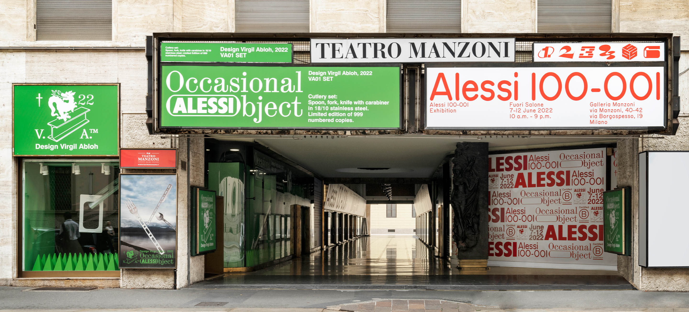
图：Alessi 100-001 展览主视觉（2022 米兰设计周，Galleria Manzoni）—— 以 12 项价值观叙事公司百年厂史，1921–2021 的官方收束表达。图源：Alessi 官方活动页。
02 品牌概述
Alessi 是 1921 年由金属工匠 Giovanni Alessi 在意大利皮埃蒙特奥梅尼亚创立的家族企业，早期做黄铜与镍银板材加工与桌面器皿，1950 年代转向不锈钢并以 ALFRA 之名进入专业餐饮市场，1970 年起在第三代 Alberto Alessi 主导下转型为与外部设计师合作的 "设计工厂"，1983 年 Tea & Coffee Piazza 项目奠定其意大利设计工厂地位。现行法人名称为 ALESSI S.p.A.，注册于 Crusinallo di Omegna（VB），Via Privata Alessi 6。官方自我定位为 "自 1921 年以来的梦工厂"（Since 1921, The Dream Factory），核心主张是 "让艺术、诗意与情感进入日常生活"（To make art, poetry, and emotion part of everyday life）。公司 2017 年起获 B Corp 认证，2020 年注册为 Società Benefit；2019 年英国 Oakley Capital 增资进入，家族仍持股并主导设计与品牌。
| 项目 | 内容 |
|---|---|
| 品牌名 | Alessi（现行法人 ALESSI S.p.A.；前身 Fratelli Alessi Omegna / ALFRA） |
| 国家 / 地区 | 意大利（1921 年创立于皮埃蒙特奥梅尼亚；总部 Via Privata Alessi 6, 28887 Crusinallo di Omegna (VB)） |
| 成立时间 | 1921 年 FAO 工坊；1945 年 Bombé 设计；1970 年 Alberto Alessi 入司开启设计工厂转型；1983 年 Tea & Coffee Piazza |
| 创始人 | Giovanni Alessi（金属工匠，与兄弟共立）；第二代 Carlo Alessi（1916–2010）与 Ettore Alessi；第三代 Alberto Alessi（1970 年入司） |
| 代表性设计人物 | Alessandro Mendini（1977 年起合作，官方史家 / 顾问）、Ettore Sottsass、Richard Sapper、Aldo Rossi、Michael Graves、Philippe Starck、深泽直人、Michele De Lucchi |
| 官方理念 | "让艺术、诗意与情感进入日常生活"；"一件真正的设计作品必须是诗意的"；"梦工厂"—— 一个面向世界最优创意的平台 |
| 品牌归属 | 家族＋外部资本：2019-08-28 Oakley Capital 增资持股 40%（家族 60%）；2024 年媒体口径 Oakley 51% / 家族 49%；CEO Alberto Camerlengo，主席 Alberto Alessi |
| 核心业务 | 设计餐具、桌面用品、厨具锅具、摩卡壶 / 咖啡具、小家电、家居饰品、礼品与限量收藏件；三线品牌 ALESSI / OFFICINA ALESSI / A di ALESSI |
| 经典产品 | Bombé（1945）、9090 摩卡壶（1978/79，金圆规）、9091 鸣笛水壶（1983/84）、La Conica（1984）、9093 鸟鸣水壶（1985）、Juicy Salif（1990）、Anna G.（1994） |
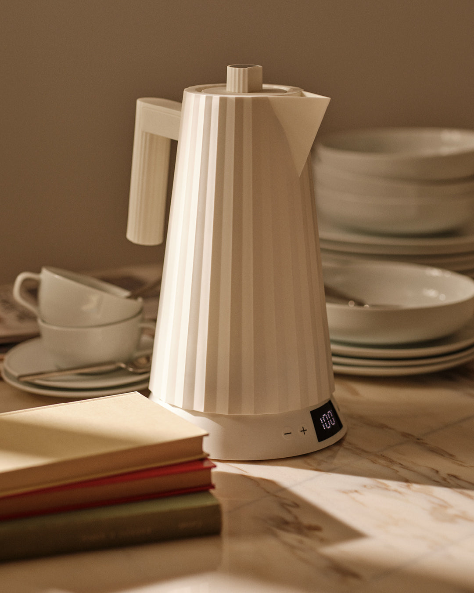
图：Alessi 官网 "梦工厂" 叙事首屏图 ——Crusinallo 工厂与生活场景，The Dream Factory 定位的官方主视觉。图源：Alessi 官方关于页。
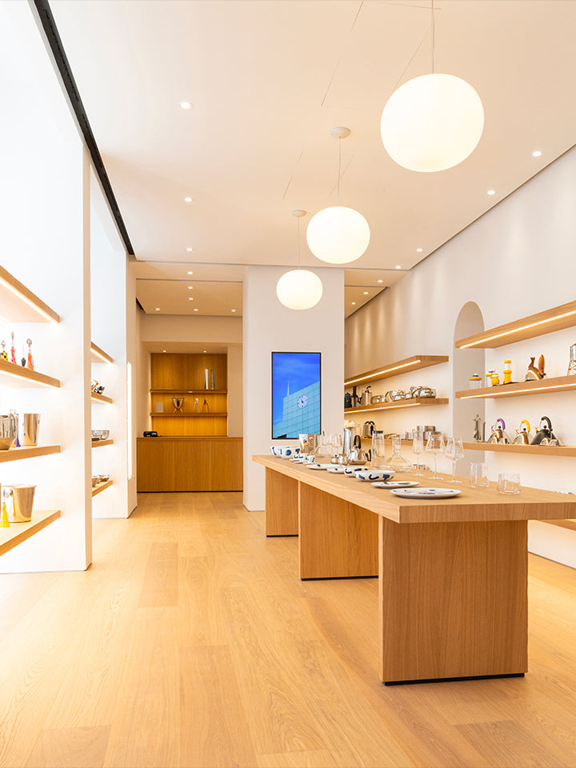
图：深泽直人设计的全新概念店内陈列 —— 米兰 Via Manzoni 与东京南青山同步开业（2025/2026），店内常驻陈列 500 余件产品。图源：Alessi 官方概念店新闻。
03 Brand 品牌：从 Omegna 镍银工坊到全球 "梦工厂"
1921：Fratelli Alessi Omegna 与镍银工坊
官方品牌史把起点定在 1921 年："In 1921, Giovanni Alessi and his brother founded FAO"—— 公司实体名为 Fratelli Alessi Omegna，官方定义为 "附铸造坊的黄铜与镍银（nickel silver /alpacca）板材加工车间"。厂址位于皮埃蒙特奥塔湖金属加工区的 Omegna，工厂现址为 Crusinallo di Omegna。早期产品以铜、黄铜、镍银为基材，表面镀镍、镀铬或镀银，设计语言直接对标 20 世纪初奥地利与英国高端家居器皿厂商，以手工精度与完成度著称。公司早期为他人做银器与铜器代工，Bombé 之后才转向原创产品 —— 这条 "代工到原创" 的路径，后来被 Alessandro Mendini 概括为 "手工→工业→设计师工厂" 的三段式叙事。
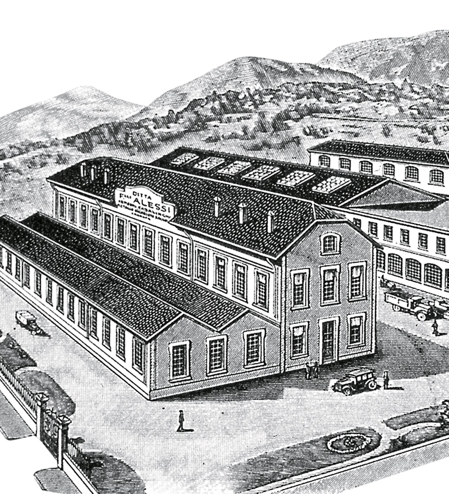
图：1921 年 Fratelli Alessi Omegna 创立时期工坊 / 企业照 —— 官方历史页 1921 节点配图。图源：Alessi 官方历史页。
1920s：镍银时代的产品语言
1920 年代的静物档案记录了早期产品语言：调味料组（portacondimenti）等圆形金属器以旋床成形、镀层收尾，造型接近同时代欧洲高端餐具的装饰风。这段时期的产品没有设计师署名 —— 设计由工坊内部完成，器物以材料与完成度而非形态取胜，与 1970 年代以后的 "作者设计" 构成鲜明对照。
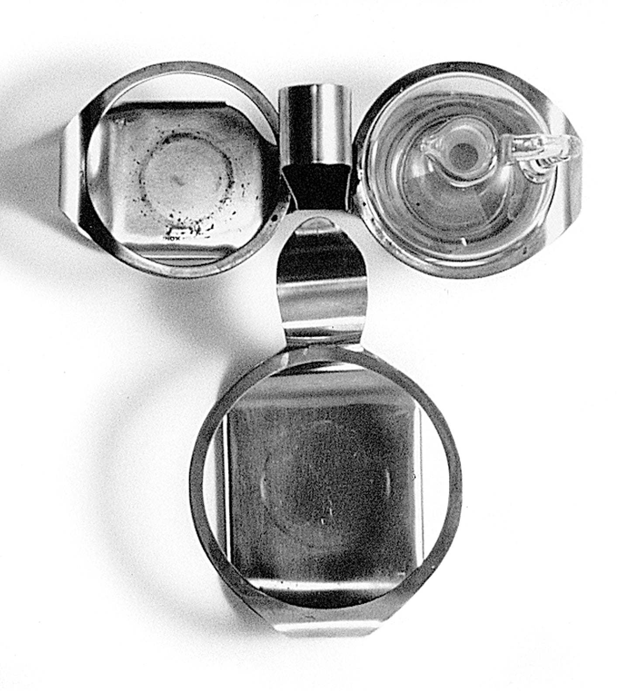
图：早期镍银 / 黄铜制品静物（调味料组等）——1920 年代工坊时期的产品语言。图源：Alessi 官方历史页。
1932–1945：Carlo Alessi 与第一代原创产品
1932 年，创始人长子 Carlo Alessi（生于 1916 年，Verbania）加入家族企业，1930 年代中期至 1945 年间设计公司大部分产品。二战后意大利从手工旋床生产向工业冲压过渡，Carlo 主持的产品（Ottagonale、Cilindrica 等）把这一过渡期的工业条件纳入造型语言。1945 年，次子 Ettore Alessi 入司主管技术部；1950 年代 Ettore 引入首批外部独立设计师 Carlo Mazzeri 与 Luigi Massoni—— 公司开始出现 "署名设计" 的萌芽。
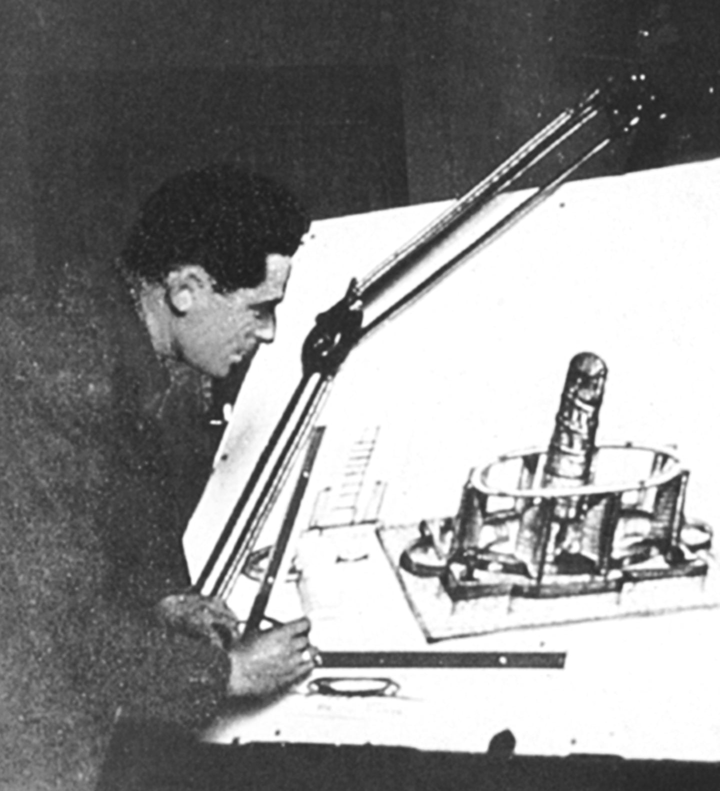
图：Carlo Alessi（Giovanni 长子）——1932 年入司，1930 年代中期至 1945 年公司主力设计师。图源：Alessi 官方历史页。
1945：Bombé 与战后设计
Bombé 茶咖具系列由 Carlo Alessi 设计于 1945 年，是他主持设计生涯的最后一件作品，之后他转任总经理并开启公司外部设计师合作时代。官方产品叙事给出的一段轶事：Carlo 与摩卡壶发明者 Alfonso Bialetti 之女 Germana 恋爱期间常到 Bialetti 家中喝茶，提亲时他设计了 Bombé 系列作为订婚纪念。系列含咖啡壶、茶壶、奶壶、糖罐、托盘五件，四档容量（2/4/6/8 杯），圆润鼓出的球形壶身（bombé 即 "鼓出"），初代在旋床上成形（al tornio），配胶木（bakelite）手柄与盖钮。1945–1963 年初代为重黄铜镀铬 / 镀银，1963 年起转 18/10 不锈钢；现行版为抛光 18/10 不锈钢配胶木手柄，部分单品（奶壶）产品页标注投产年份 1991。官方称 Bombé 至今仍是目录中最畅销的茶 / 咖啡具系列之一。
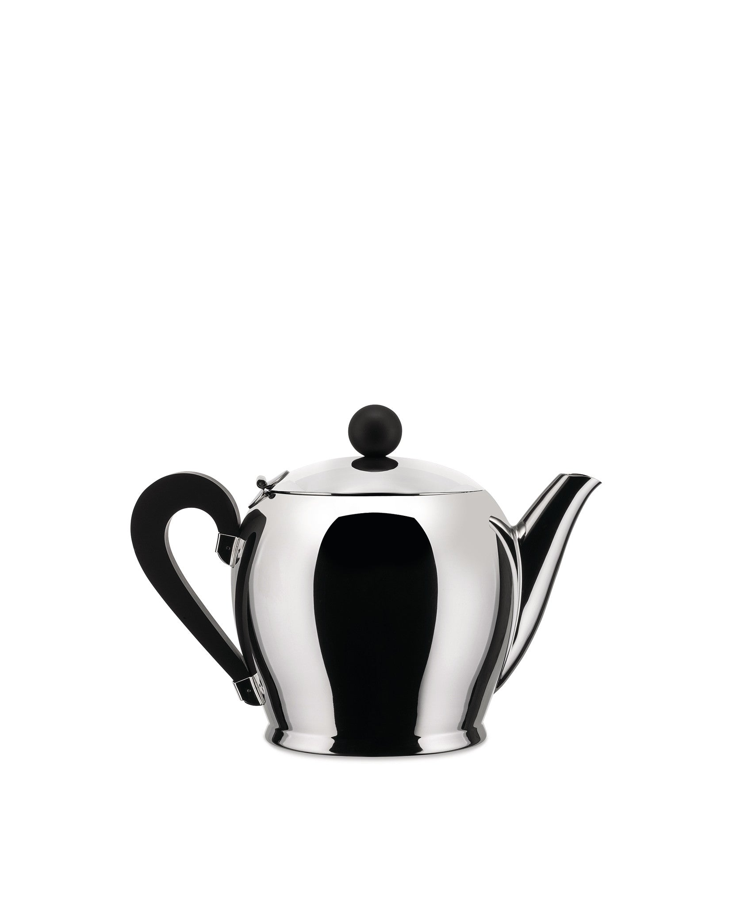
图：Bombé 茶壶（Carlo Alessi, 1945）—— 抛光 18/10 不锈钢球形鼓腹与胶木黑柄，公司第一代原创产品的现行形态。图源：Alessi 官方 Bombé 茶壶页。
1950s：ALFRA 与不锈钢转型
1950 年代，公司逐渐放弃铜、黄铜与镍银等软金属，转向不锈钢，启用新名 ALFRA（ALessi FRAtelli 缩写），专攻酒店、餐厅与酒吧专业用品。车间从手工作坊升级到工业规模，钢丝篮与果碗等 "工业类型件" 在这一时期成熟。这段 "专业餐饮不锈钢" 阶段为 1960 年代的家用化与国际市场铺垫了制造能力 —— 不锈钢此后成为 Alessi 的基材。
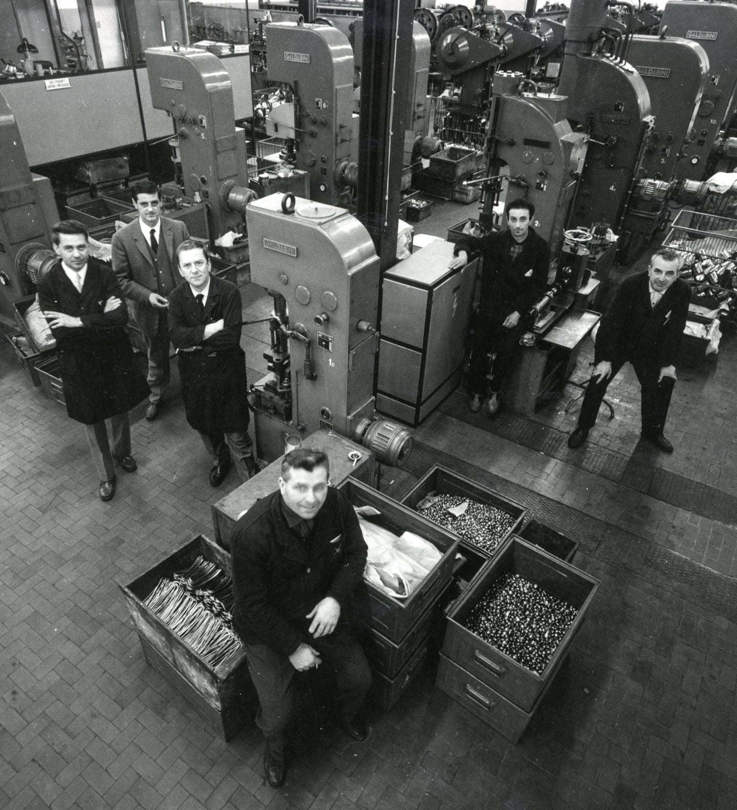
图：1950 年代转向不锈钢、更名 ALFRA 时期的老车间 / 工厂照片 —— 官方历史页 1950s 节点配图。图源：Alessi 官方历史页。
1960s：Ceselleria Alessi 家用线
1960 年代，公司推出家用线 "Ceselleria Alessi" 并打开国际市场，官方历史页称 "抛光与缎面不锈钢产品" 成就了国际声誉；1964 年公司获 "Mercurio d'Oro 工业奖"（击败逾百家竞争企业）。广告档案中的家用线产品以钢丝篮、果碗与桌面不锈钢件为主，定价面向中产家庭 —— 这是 Alessi 第一次以 "家用设计品牌" 而非 "专业餐饮供应商" 的身份出现。
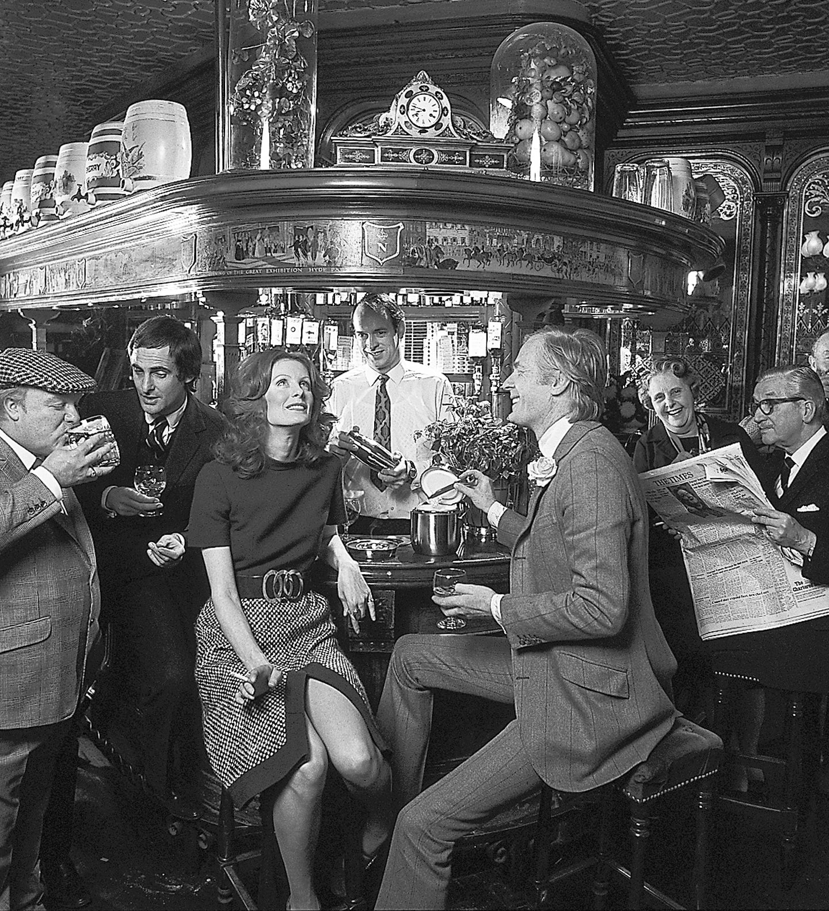
图：1960 年代 Ceselleria Alessi 家用线产品广告 / 目录图 —— 官方历史页 1960s 节点配图。图源：Alessi 官方历史页。
1970：Alberto Alessi 与 "设计工厂" 转型
1970 年，创始人之孙 Alberto Alessi 加入公司。他的首批自主项目包括 Exhibition Design 小组的托盘篮具、Franco Sargiani 与 Eija Helander 的模块化餐具，以及 "Alessi d'Après" 艺术复制品研究（参与者含 Salvador Dalí）—— 后者被官方历史页视为 Alberto"生产不仅具有功能、还能满足人们对艺术与诗歌之需求的物品" 这一愿望的宣言。1970 年代，公司与 Ettore Sottsass、Richard Sapper、Achille Castiglioni、Alessandro Mendini 建立伙伴关系，官方称这段合作 "促成公司转型为 Alberto 设想中的设计工厂"。Alessandro Mendini 的合作起点为 1977 年 ——Alberto Alessi 在费城艺术博物馆展签中明确表述 "Mendini began working with us in 1977——as architect, design manager, and consultant"，其身份是建筑师 / 设计经理 / 顾问，公司内部尊称其为 "官方史家"（official historiographer），而非艺术总监。
1983–2000s：Tea & Coffee Piazza 与建筑师合作
1983 年，Mendini 牵头启动 "Tea & Coffee Piazza" 研究项目：向国际后现代建筑师发出 "一套茶与咖啡具" 的命题，把建筑师大尺度设计愿景压缩到小尺度器物。项目成果同年展出，并借此发掘出 Aldo Rossi 与 Michael Graves 两位设计师 —— 前者随后产出 La Conica 摩卡壶（1984），后者产出 9093 鸟鸣水壶（1985）。1990 年代初，公司成立 Centro Studi Alessi（CSA），双重使命：发表与器物相关的理论文章、统筹与年轻设计师的合作（Guido Venturini 的 Firebird 打火机、Stefano Giovannoni 的 Mary Biscuit 饼干罐等 icon 产品诞生于此），同期材料从几乎只用钢扩展到木、塑料、玻璃、瓷与陶瓷。2000 年，Tea & Coffee Towers 延续同一理论假设，合作建筑师扩展至 David Chipperfield、Fuksas 夫妇、Zaha Hadid 与伊东丰雄。
1998：Museo Alessi
1998 年春季，Museo Alessi 在 Omegna/Crusinallo 工厂内开馆，建筑与展陈由 Alessandro Mendini 设计。博物馆保存并展示公司历年全部器物、设计稿、图片与史料，兼收全球设计藏品，藏量超过 25,000 件（原型、模具、未竟方案、初版、草图），档案中代表设计师逾 1,000 位。参观免费、仅接受预约，周一至周五开放，须提前两周预约。2023 年开馆 25 周年之际，博物馆在米兰 Via Manzoni 14 旗舰店举办回顾展。
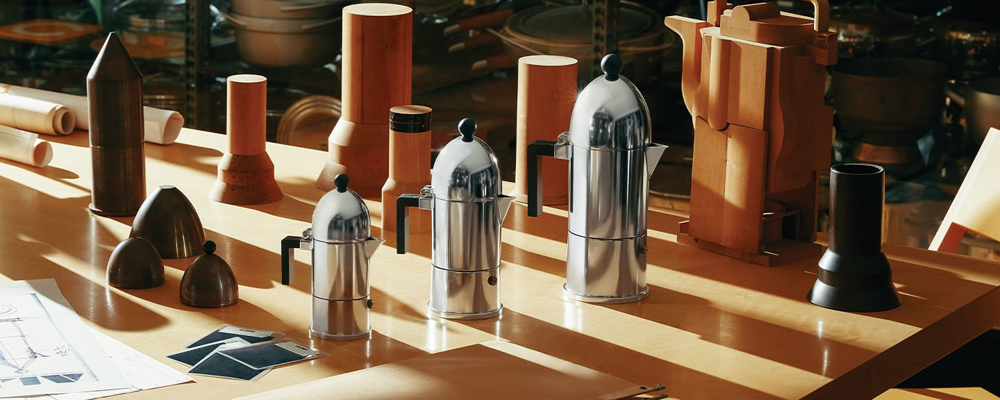
图：Museo Alessi（1998 年开馆，Alessandro Mendini 设计）—— 设于 Crusinallo 工厂内，藏品逾 25,000 件。图源：Alessi 官方博物馆页。
2001–2003：Crusinallo 工厂扩建
2001 年，Alessi 购入相邻地块启动工厂扩建 / 新厂项目，建筑由长期合作者 Alessandro Mendini 主持 ——Alberto Alessi 在费城艺术博物馆展签中确认 Mendini"为 Crusinallo 的工厂设计了两次扩建与 Alessi 博物馆"。Modern Magazine 2013 年报道称 Mendini 提交了四版方案才满足当地主管部门要求。生产现状上，最复杂、历史最久的冷压不锈钢制品（水壶、摩卡壶）仍在 Crusinallo 老厂生产。
2019–2026：Oakley 资本与治理
2019 年 8 月 28 日，Alessi 与英国基金 Oakley Capital 正式签约：Oakley 以增资方式取得 40% 股权进入，家族持股公司（Carlo ed Ettore di Alberto, Alessio e Stefano Alessi & C Sapa）保留 60%；增资款全部投入公司，用于零售渠道更新强化、传播与数字化。公告列明董事会成员含 Alberto Alessi Anghini、Alessio 与 Stefano Alessi Anghini 及 Oakley 方代表；Alberto Alessi 续任 Alessi S.p.A. 主席，主管产品、品牌识别与设计卓越性。2024 年前后，公关代理文章称股权结构变为 Oakley Capital 51% / 家族 49%（未见公司官方新闻稿或意大利工商档案佐证）。现行管理层（核至 2026 年 10 月）：CEO 为 Alberto Camerlengo（履历含 Brooks Brothers Europe CEO 2004–2011、Furla COO 2011–2017），CCO Paolo Roviera、CDO Pablo Daniel、COO Giancarlo Chirulli、CFO Gianfranco Parolo；设计总监为家族第四代 Carlo Gasparini；主席仍为 Alberto Alessi。公司 2020 年注册为意大利 Società Benefit，2017 年起获 B Corp 认证。
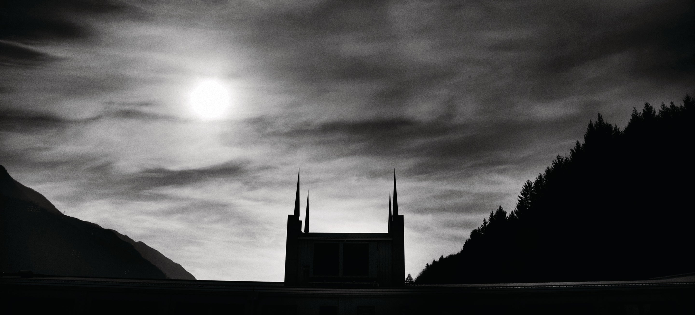
图：2019 年 Oakley Capital 增资入股新闻稿页头图 ——Crusinallo 工厂双塔剪影。图源：Alessi 官方新闻稿。
04 Category 品类与市场：设计餐具与桌面物的窄与深
品类定义：设计工厂而非厨具厂
Alessi 官方自我定位是 "设计工厂"（Dream Factory / Design Factory），而非单纯的厨具厂或餐具厂：品类横跨桌面用品、厨房器具、餐厨小家电、家居饰品、礼品与限量收藏件。官网栏目结构（2026-10-26 实查）含 Decorate your table（餐盘杯具刀叉托盘）、Steel selection（不锈钢果篮托盘与厨房小件）、Kitchen essentials（锅具厨具小家电）、Designer Tea & Coffee（茶壶摩卡壶水壶咖啡配件）、Cookware & Pan Sets（不锈钢汤锅煎锅套件）、Flatware（刀叉勺）、Kitchen Tools（削皮器计时器榨汁器）、Kettles、Coffee Makers、Home（家居饰品香氛钟浴室小件）、Lifestyle、Design Collectors（设计摆件花瓶）、Limited Editions（编号限量）与两个礼品栏目（Milestone Gift Collection、The Perfect Gift）。
产品线分三层：Icon 经典符号线（Juicy Salif、Anna G.、9091/9093 水壶、La Conica、Moka Alessi 等长期在产并被官方标注 "Icon" 标签的作品）；Engravable 可定制雕刻线（大量单品标注可刻字，面向礼品场景）；Limited Edition 限量线（如 Anna G. 限量版 €3,000、The Jester 开瓶器 €1,000、Casse-noix 核桃夹 €1,100）。子品牌结构上，公司 2006 年把全部产品重新划分为三条品牌线：ALESSI（主线）、OFFICINA ALESSI（实验 / 小批量 / 限量）、A di ALESSI（大众 / 流行 / 低价）。Officina Alessi 的商标创立于 1979–1983 年 Tea & Coffee Piazza 时期，1980 年代成为公司 "超级品牌"，2006 年复活；Alessi 目录与现行官网中未检索到名为 "Offseries" 的产品系列实体。
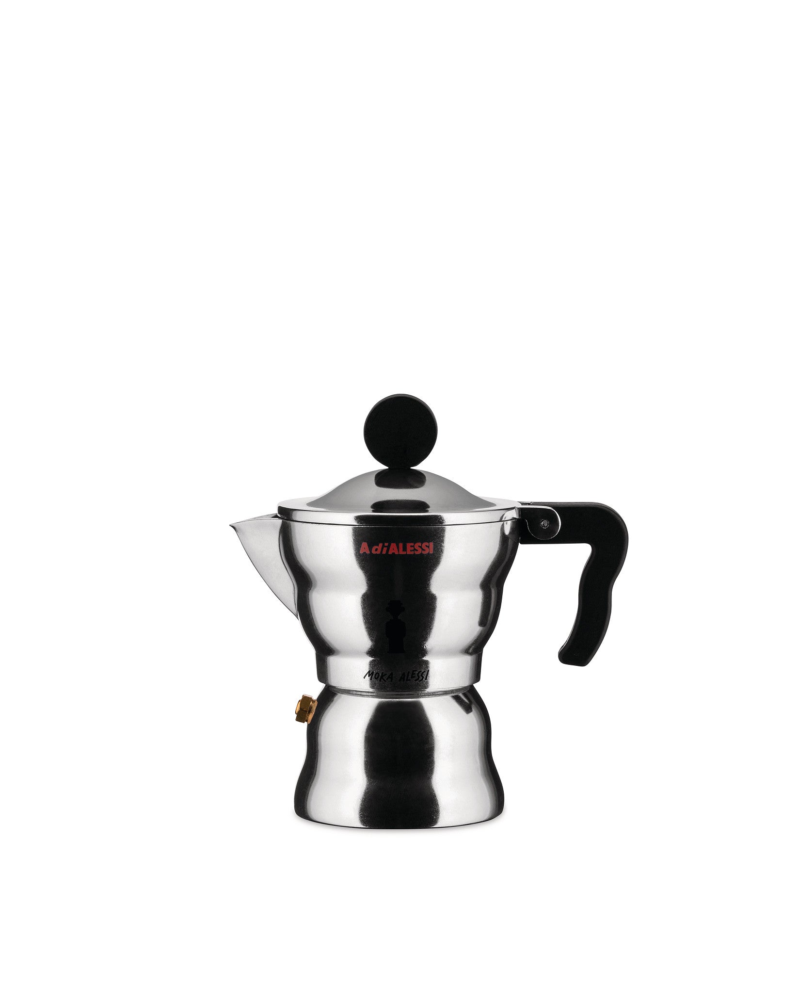
图：Moka Alessi 入门摩卡壶（A di ALESSI 标）—— 现行最入门档摩卡壶之一，欧盟站 €45 起。图源：Alessi 官方 Moka Alessi 产品页。
市场规模的判断口径
第三方机构对家居与餐厨市场的统计口径差异较大，以下只作方向性参考。意大利桌面 + 厨房用品市场 2025 年规模超过 80 亿欧元（较 2023 年增长约 6%，其中厨房用品约 55 亿欧元，ART Confcommercio 行业数据）；意大利不锈钢炊具市场 2025 年约 4.62 亿美元、预计 2034 年 7.73 亿美元（CAGR 5.81%）；全球陶瓷餐具 / 餐盘市场 2025 年约 131 亿美元、预计 2035 年 243 亿美元（CAGR 6.4%）；意大利整体家居用品市场 2025 年约 35.75 亿美元；意大利家具与设计产业 2025 年营收 267 亿欧元，居欧洲首位。Alessi 单一品牌营收未在公开渠道披露，其定位在 "设计溢价" 细分，而非走量大众餐厨市场。
价格带：2026 年 10 月官方渠道实查
alessi.com 为主站，按语言 / 国家分流至区域子站，欧盟站欧元为含 VAT 公示价、美国站美元不含税。以下为 2026-10-26 实查的现行官方挂牌价：
| 单品 | 设计师 | 欧盟站 € | 美国站 $ | 备注 |
|---|---|---|---|---|
| Moka Alessi 入门摩卡壶 | Alessi | 45 起 | 55–100 起 | 入门档 |
| Juicy Salif 柠檬榨汁器 | Philippe Starck | 90 | 150 | Icon |
| Anna G. 开瓶器（基础版） | Alessandro Mendini | 60 | 155 | 特涂版 €95 |
| Anna G. 限量版 | Mendini / Studio Temp | 3,000 | 3,140 | Limited Edition |
| 9090 意式咖啡机 | Richard Sapper | 160 起 | — | 1979 金圆规 |
| 9093 蓝鸟水壶 | Michael Graves | 170–190 | 350–375 | 40 周年黑版 €190 |
| Bombé 糖罐 | Carlo Alessi | 200 | 480 | CA14/8 |
| La Cintura di Orione 长柄带盖汤锅 | Sapper / Marchesi | 230（促销 161） | — | 锅具，非咖啡壶 |
| La Cintura di Orione 长柄单柄锅 | Sapper / Marchesi | 285 | — | — |
| La Conica 摩卡壶（3 杯起） | Aldo Rossi | 265 起 | 650 起 | 长柄版 €310 |
| Bombé 茶壶 | Carlo Alessi | 350 | 760 | — |
| 9091 鸣笛水壶（黄铜双音哨） | Richard Sapper | 280 | 550 | mi/si 双音 |
价格带结构：入门礼品小件 €10–60（削皮器 €35、计时器 €39、钥匙扣 €25）；经典符号件 €60–300（Juicy Salif €90、Anna G. €60–95、Moka Alessi €45 起、9090 €160、9091 €280）；设计师 / 高收藏件 €300–1,000（Bombé 茶壶 €350、La Cintura 系列 €230–285、雕塑件 €275–950）；限量 / 编号件 €1,000–3,000+。同一单品不同区域站价差主要由税费、运费与汇率构成。
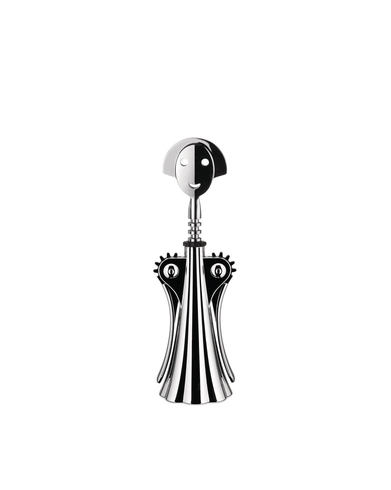
图：Anna G. 镀铬人形开瓶器（Alessandro Mendini, 1994，现行 AM01 Z 版）—— 经典符号件价格带的代表，欧盟站 €60–95、限量版 €3,000。图源：Alessi 官方 Anna G. 产品页。
渠道结构
渠道分四路。一是官网电商：alessi.com 为 Shopify 架构多语种 D2C 商城（it/fr/de/es/uk/us/ch/se 等区域子站），支付含信用卡、ShopPay、PayPal、Google Pay、Apple Pay，收货后 14 天内可申请更换；Oakley Capital 官方组合页称 Alessi 约 30% 收入来自数字渠道。二是旗舰店与专柜：米兰 Via Manzoni 旗舰店 2011 年开业；纽约 SoHo 130 Greene Street 旗舰 2006 年 9 月开业（Asymptote Architecture 设计室内与展陈系统）；2025/2026 年由深泽直人操刀的全新概念店在米兰与东京表参道（南青山 3-7-1）同步开业。三是经销商与博物馆商店：Selfridges、Finnish Design Shop、Connox、Farfetch、Wayfair 等设计渠道，以及 MoMA Design Store（纽约 / 线上 / 东京）、Cooper Hewitt Shop 等博物馆商店。四是 B2B 礼品定制：官方 Corporate Gifts 页面提供 logo 印制、定制色、定制包装。中国市场：天猫 / 淘宝存在 "ALESSI 旗舰店"（单件标价 ¥1,500，店铺评分 4.8–4.9），第三方渠道在售鸟鸣水壶约 ¥1,470–1,620、铝制摩卡壶约 ¥330–490；上海八佰伴 7 楼有专柜（第三方网点站记录）；京东自营 / 官方旗舰店证据待核实。
05 User 用户与场景：送礼、收藏与日常
买者、定者与用者分离
Alessi 大量单品的购买动机是 "送礼" 而非 "自用"：官网把 Gift（Milestone Gift、Wedding Gift、The Perfect Gift）提升为一级栏目，并为 B2B 单独开设 Corporate Gifts 页面提供 logo 定制、定制色与定制包装；"Engravable" 标签在经典件上普遍出现，把 "可刻字" 变成标准化礼品能力。买者结构三类：终端礼品购买者（婚丧嫁娶、商务伴手礼）、设计藏家与设计师群体（购买限量与编号件）、高端家用自购者（锅具、餐具日常使用）。三类人群在同一 SKU 上交叉。
| 场景 | 核心任务 | 主要入口 | 典型型号 / 价格带 |
|---|---|---|---|
| 礼品（婚礼 / 纪念 / 商务） | 送出 "有设计故事、可刻字、拆开就认得" 的物件 | 官网 Gift 栏目、博物馆商店、高端百货家居层 | €60–845 礼品套件；Juicy Salif €90、Anna G. €60–95 |
| 设计收藏与博物馆语境 | 收藏一件 "上了 MoMA" 的经典件或编号限量 | MoMA Design Store、Design Collectors / Limited Editions 栏目 | 9093（MoMA 商店在售）、限量件 €1,000–3,000+ |
| 高端日常家用 | 锅具 / 餐具真实烹饪用餐，18/10 钢、感应炉兼容、洗碗机可用 | Cookware、Flatware、Kitchen Essentials 栏目 | Mami/Pots&Pans/Edo/Convivio 锅具线，套装 €300–530 |
术语注释：JTBD（Jobs to Be Done，用户任务）—— 用户 "雇佣" 产品完成的功能、情感与社会任务。 术语注释：CEP（Category Entry Points，品类入口）—— 用户首次意识到需求、接触品类的具体场景与渠道。
消费者社区方面，官网长期运营 Bestsellers 栏目，主推 Plissé 电水壶、Juicy Salif、Pulcina、Anna G. 四件 "长期畅销符号"；二手 / 收藏市场（Catawiki 等）出现 9091 早期 Flute 铜钢版本竞拍成交，说明经典件具备二级市场；经销商（Finnish Design Shop、Connox、Selfridges、Farfetch、Wayfair）普遍以 7–8 折销售经典件，与官网正价形成价差。渠道入口的特殊性在于：官网同时承担 "品牌叙事＋礼品定制＋正价零售" 三重功能，经销商承担折扣零售与本地触达，博物馆商店承担 "设计正当性" 背书 —— 购买 Alessi 的体验是 "先被故事说服，再为故事付溢价"。
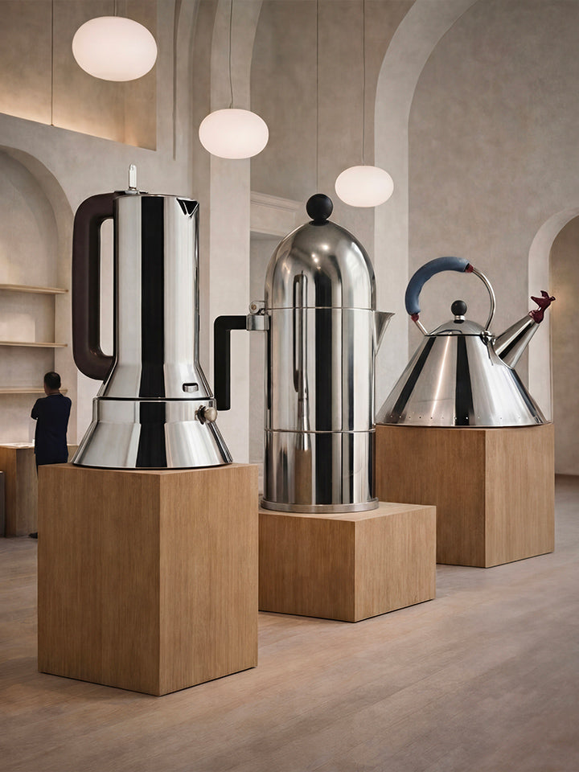
图：深泽直人概念店产品陈列台 —— 礼品与桌面小件在零售端的呈现方式。图源：Alessi 官方概念店新闻。
06 Positioning 定位：艺术与工业之间的 "设计工厂"
参照系与目标人群
Alessi 的参照系不是大众餐厨品牌，而是设计博物馆体系与意大利设计史的交汇：Kartell、Magis（意大利设计同侪）、Normann Copenhagen 与 HAY（北欧设计小物）、Tom Dixon（英国工业感家居）、Fornasetti（图像装饰家居），以及大众摩卡壶品牌 Bialetti。目标人群三层：为 "设计故事＋意大利制造＋博物馆背书" 付费的礼品购买者；把经典件当 "设计收藏" 的藏家与设计师；把锅具餐具当日常用品的家庭自购者。三者的共同点都在买 "叙事"—— 产品是否出自某位建筑师之手、是否入藏 MoMA、能否在餐桌上开启对话。
差异点与共同点
术语注释：POD（Point of Difference，差异点）—— 品牌相对竞品独有的、被消费者认可的差异。 术语注释：POP（Points of Parity，基准点）—— 在品类中必须具备、否则无法入围的共性能力。
Alessi 的 POD 有三个。一是 "设计师作者制度"：官方口径 "设计师不是单纯的顾问，他们是真正的作者，自由表达诗意与创新的愿景"——900 多位合作设计师的署名史本身成为品牌资产，每件经典件都带着设计师的名字与故事进入市场。二是 "艺术与工业的中间地带"：产品以 18/10 不锈钢、铸铝等工业材料量产，却以 "诗意、情感、记忆" 为设计目标，把建筑师的尺度语言（La Conica 的锥体、9093 的鸟哨）压缩进厨房台面。三是 "博物馆体系背书"：作品被 50 余家国际博物馆永久收藏，MoMA 馆藏（9090、Juicy Salif）直接进入产品叙事。POP 同样是三项：金属工艺品质（镜面抛光、18/10 钢、洗碗机可用）、合理的礼品价位（€60–300 主力带）、全球经销与 D2C 电商交付网络 —— 这三点是入围礼品候选清单的入场券，但只靠它们，Alessi 就只是另一家餐具厂。
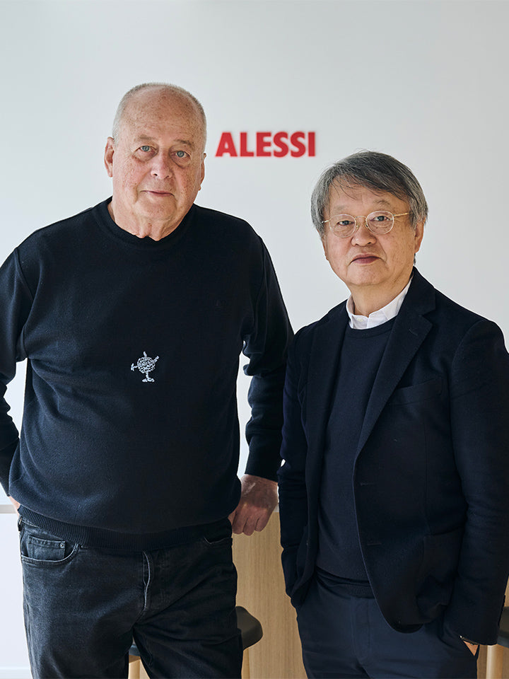
图：深泽直人概念店内景（木长桌与产品陈列）—— 品牌参照系里的 "东方极简" 一脉。图源：Alessi 官方概念店新闻。
从品牌承诺到产品证据的链
Alessi 的承诺链是："一件设计作品必须打动人心、传达情感、唤起记忆、制造惊喜、逾越常规 —— 总之它必须是诗意的。"（Alberto Alessi 论 Juicy Salif 的官方引文）落到产品：9090 用杠杆锁扣解决摩卡壶烫手问题并自喻 "一台小蒸汽机"；9091 把蒸汽出口做成 mi/si 双音旋律而非锅炉汽笛；9093 用鸟形哨嘴让人 "微笑"；Juicy Salif 的官方叙事是 "不是用来榨柠檬的，是用来开启对话的"。这条证据链的完整度是 Alessi 与 "设计小物" 标签下其他品牌的区分核心 —— 它不靠造型新鲜度，靠的是 "设计师署名＋诗意叙事＋博物馆背书＋金属工艺" 的组合拳。
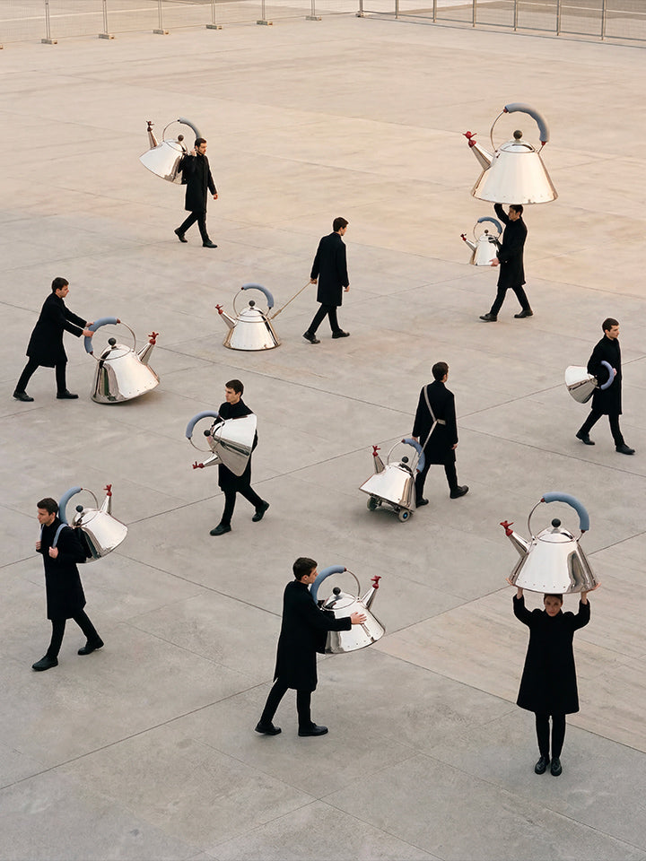
图：概念店墙面货架陈列 —— 经典符号与锅具线在零售端的视觉密度。图源：Alessi 官方概念店新闻。
07 Product 产品：从 1945 的 Bombé 到 2025 的 Plissé
产品组合与命名逻辑：型号数字、系列名与三线品牌
Alessi 的产品命名体系混合了三种逻辑：数字型号（9090、9091、9093 等 Sapper/Graves 时代的咖啡具与水壶编号）、系列名（Bombé、La Conica、La Cintura di Orione、Nuovo Milano 等意大利语命名）、设计师署名（Anna G.、Moka Alessi、Pots&Pans 等以设计师名或功能命名的当代线）。三线品牌结构（ALESSI 主线 / OFFICINA ALESSI 实验限量线 / A di ALESSI 大众流行线）于 2006 年确立。年份沿革上，1945 为 Bombé 设计年（1963 起不锈钢、现行 1991 再版线）、1978/79 为 9090 设计 / 获奖年、1983/84 为 9091 设计 / 投产年、1984 为 La Conica 投产年、1985 为 9093 投产年、1986 为 La Cintura 上市年、1988/90 为 Juicy Salif 设计 / 投产年、1994 为 Anna G. 首产年。现行产品目录超过 1,400 件，官方标注 "Icon" 的经典符号线长期在产。
Bombé（Carlo Alessi，1945）
Bombé 是公司第一代原创产品的代表作：球形鼓腹（bombé 即 "鼓出"）壶身、旋床成形、胶木手柄与盖钮，1945–1963 年重黄铜镀铬 / 镀银，1963 年起转 18/10 不锈钢。系列含咖啡壶、茶壶、奶壶、糖罐、托盘五件，四档容量（2/4/6/8 杯）。设计轶事：Carlo Alessi 为向摩卡壶发明者 Alfonso Bialetti 之女 Germana 提亲而作此系列。现行版为抛光 18/10 不锈钢配胶木柄，官方称至今仍是目录中最畅销的茶 / 咖啡具系列之一；Alessandro Mendini 称其为 "Alessi 产品的签名性物件"（the signature object of Alessi production）。现行价格：茶壶 €350、咖啡壶 £410、奶壶 €200（2026-10-26 实查）。
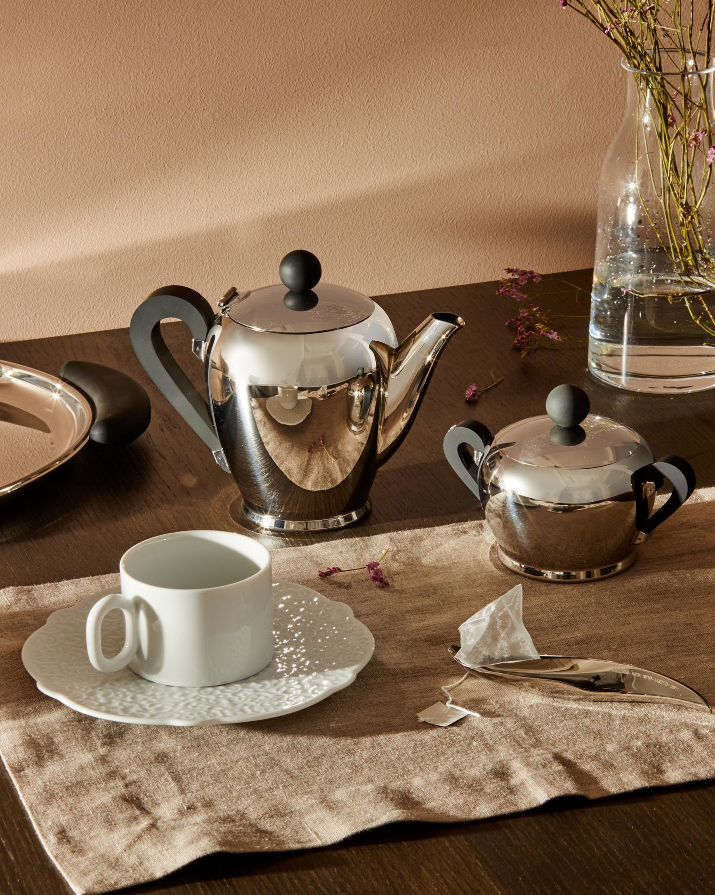
图：Bombé 茶咖具桌面场景（茶壶＋糖罐）——Carlo Alessi 1945 年设计，公司第一代原创产品的成套形态。图源：Alessi 官方 Bombé 茶壶页。
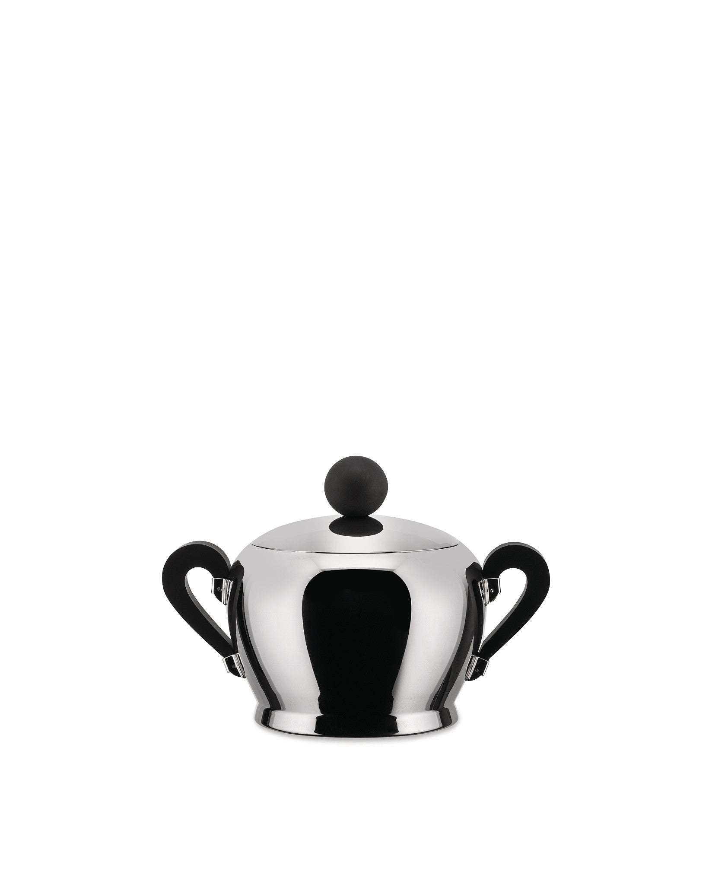
图：Bombé 糖罐（CA14）—— 球形鼓腹与胶木柄的组件之一。图源：Alessi 官方 Bombé 糖罐页。
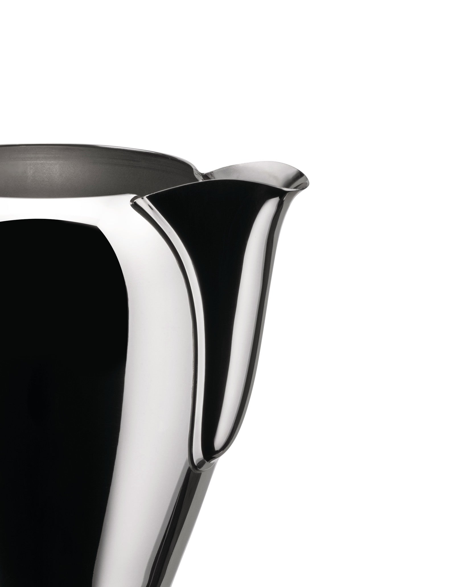
图：Bombé 奶盅（CA13）壶嘴 / 壶身特写 —— 旋床抛光钢面的细节呈现。图源：Alessi 官方 Bombé 奶盅页。
9090 摩卡壶（Richard Sapper，1978/1979）
9090 是 Sapper 与 Alessi 的首次合作，也是公司第一件金圆规作品。Alberto Alessi 委托 Sapper 解决传统摩卡壶 "旋紧螺纹烫手、难开" 的具体痛点：9090 采用 18/10 镜面抛光不锈钢壶身、加宽底座最大化受热、防滴漏壶嘴、杠杆式锁扣（单手开合）、钢制不导热手柄，全生产流程 120 多道工序。Sapper 自喻为 "一台小蒸汽机"（a little steam engine），并称 "我想赋予这台机器别家没有的性能"。设计 1978 年、1979 年发布（产品页标注投产 1980），1979 年获第 11 届金圆规 ——Alessi 历史上第一件；1980 年广告文案 "Non vi ricorda una caffettiera?（它难道不像一把咖啡壶吗？）" 成为设计史名广告。9090 入藏 MoMA 永久馆藏（1978，钢，厂商捐赠）。现行在售 9090/1（1 杯份，感应底）€160。
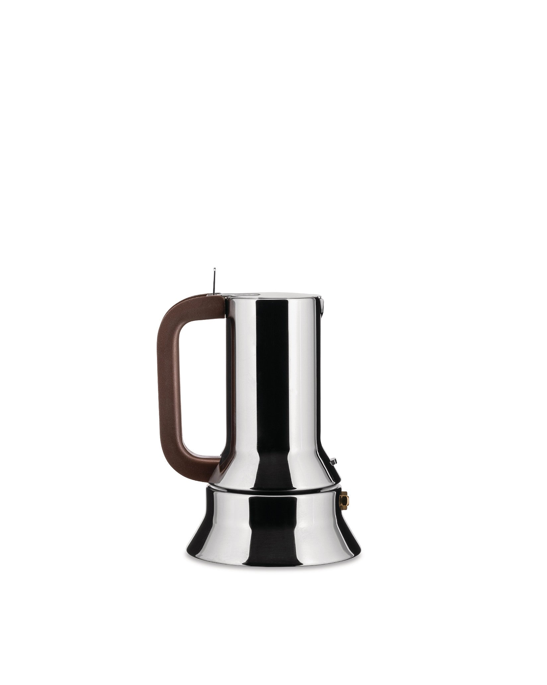
图：9090 摩卡壶（Richard Sapper, 1978/79）——18/10 镜面抛光钢、杠杆锁扣与加宽底座，Alessi 首件金圆规作品。图源：Alessi 官方 9090 产品页。
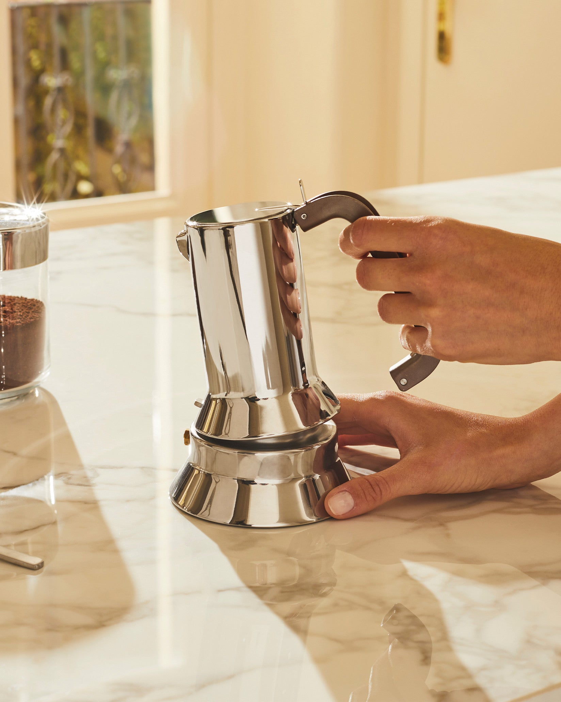
图：9090 使用场景 —— 双手开合杠杆锁扣，单手即可完成。图源：Alessi 官方 9090 产品页。
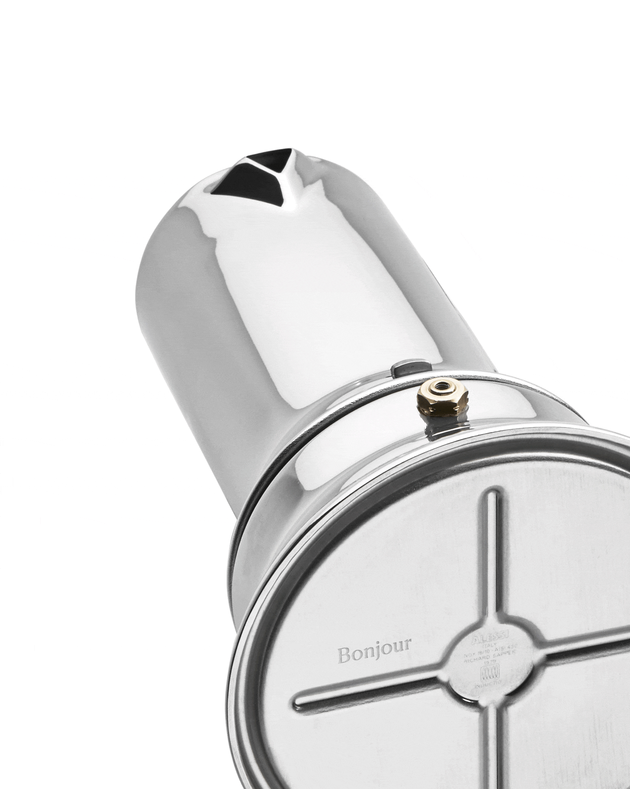
图：9090 加宽感应复底十字结构特写 —— 最大化受热的功能逻辑。图源：Alessi 官方 9090 产品页。
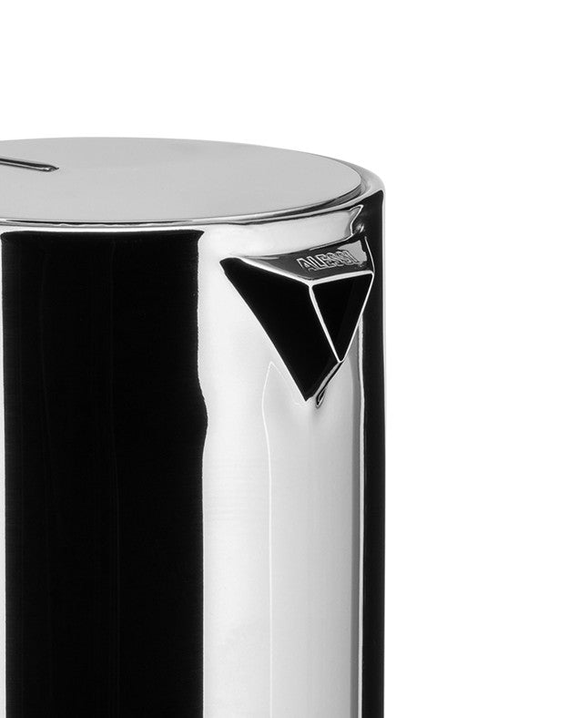
图：9090 壶盖三角提钮特写 —— 防滴漏壶嘴与杠杆锁扣的局部。图源：Alessi 官方 9090 产品页。
9091 鸣笛水壶（Richard Sapper，1983/1984）
9091 是 Sapper 与 Alessi 的第二件作品，官方称其为 "Alessi 标志性水壶系列的开端"（the first of the signature kettles），直接引出 1985 年 Graves 的 9093。核心设计是黄铜旋律鸣笛：两个小孔管分别发出 mi（E）与 si（B）两个音，灵感来自 Sapper 童年记忆中莱茵河轮船汽笛的诗意声响，他专门回德国找能做出低沉音色的哨子工匠。18/10 不锈钢壶身、黑色 PA（聚酰胺）手柄、磁性钢底适用电磁炉，容量 2L、高 19cm。设计 1983 年、投产 1984 年；Sapper 一生共获 11 次金圆规，但 9091 不在其官方获奖年表内。现行在售 €280（黄铜哨，感应底版 9091 FM）。
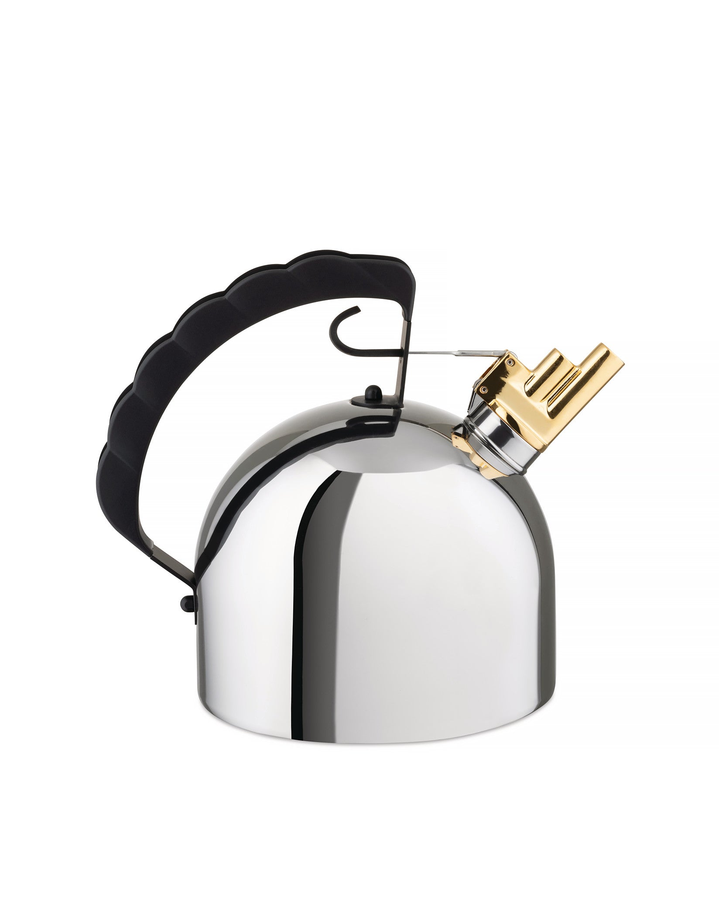
图：9091 鸣笛水壶（Richard Sapper, 1983/84）—— 不锈钢壶身与黄铜双音哨嘴，Alessi 标志性水壶系列的开端。图源：Alessi 官方 9091 产品页。
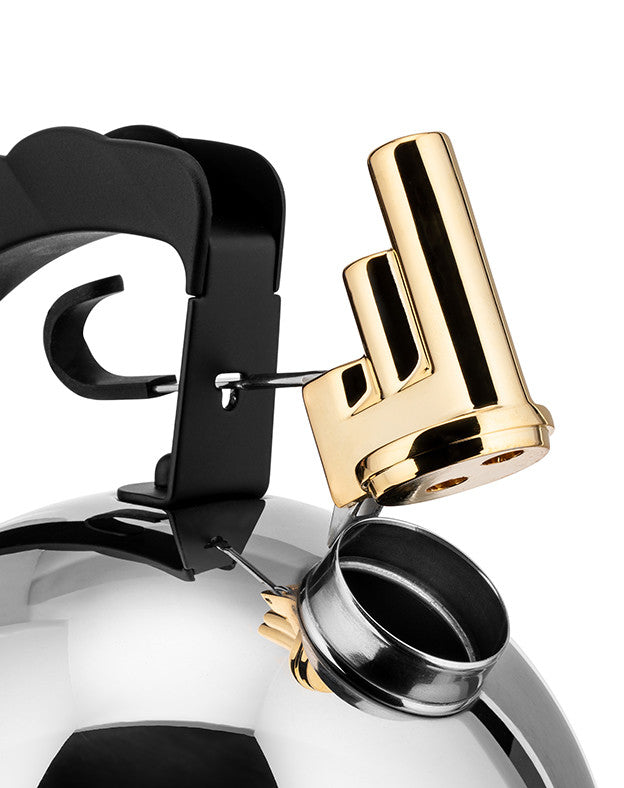
图：9091 黄铜 mi/si 双音鸣笛哨嘴特写 —— 两孔管分别发出 E 与 B 两个音。图源：Alessi 官方 9091 产品页。
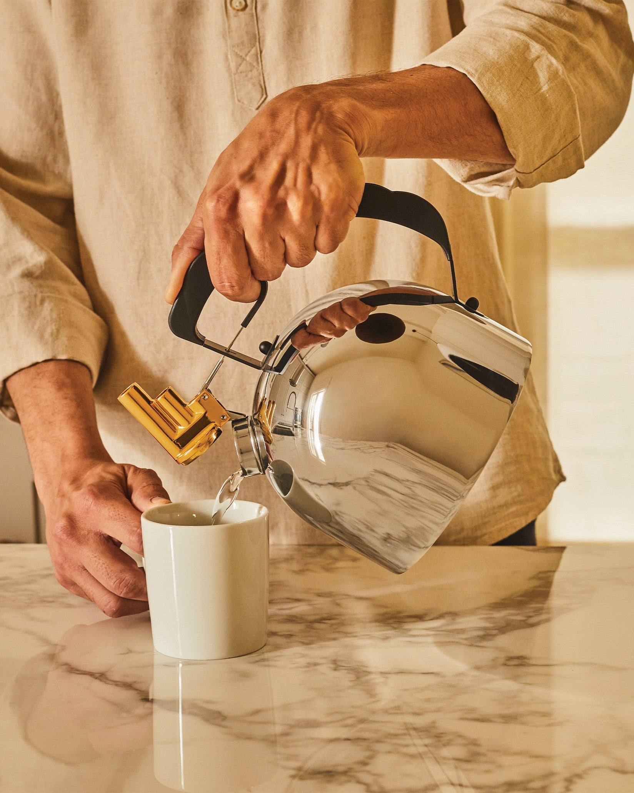
图：9091 倒水使用场景 —— 黑色 PA 提手与磁性钢底。图源：Alessi 官方 9091 产品页。
La Conica（Aldo Rossi，1984）
La Conica 是建筑师 Aldo Rossi（1931–1997，1990 年普利兹克奖得主）的第一件量产产品，也是 "桌面微建筑"（table microarchitecture）的范本：球体＋圆锥体（conica 即 "锥形"）的纯粹几何组合，18/10 不锈钢壶身配紫铜复底（铜底导热），3 杯 / 6 杯两档。品名双关：La Conica（锥形物）亦暗喻 Laconia—— 斯巴达人的故乡。项目源头是 1983 年 Tea & Coffee Piazza：Alberto Alessi 在 Mendini 策划下邀请国际建筑师设计茶咖具，La Conica 是该项目的延伸成果。设计 1980–83 年、投产 1984 年，官方称 "immediate success"；2021 年推出长柄再版 La Conica Manico Lungo——Rossi 最初构想的长柄版本被复原投产。现行价格：标准版 €265 起、长柄版 €310。
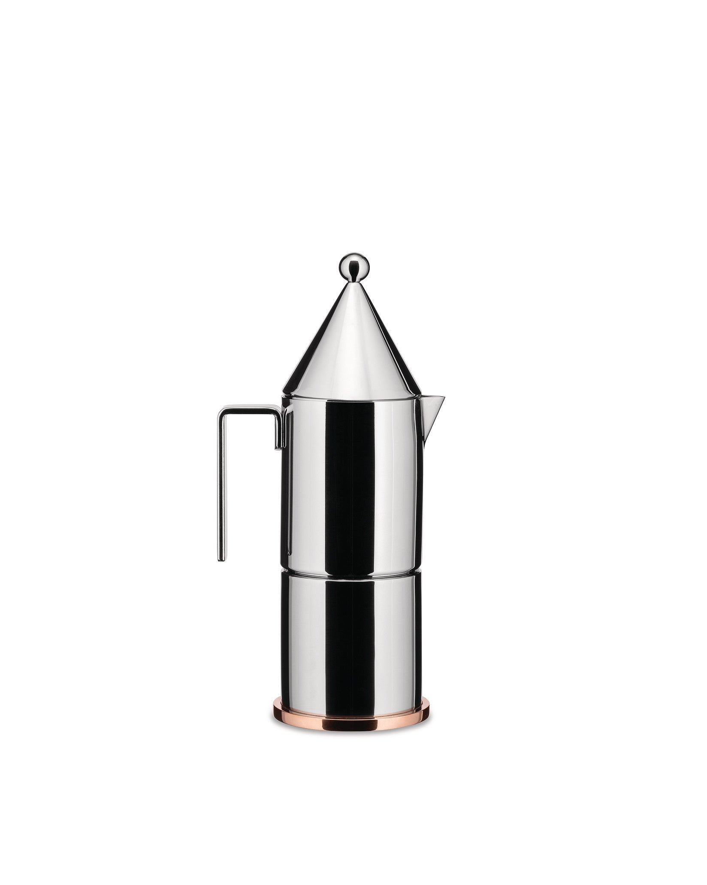
图：La Conica 摩卡壶（Aldo Rossi, 1984）—— 球体＋圆锥体几何组合，18/10 钢身配紫铜复底。图源：Alessi 官方 La Conica 产品页。
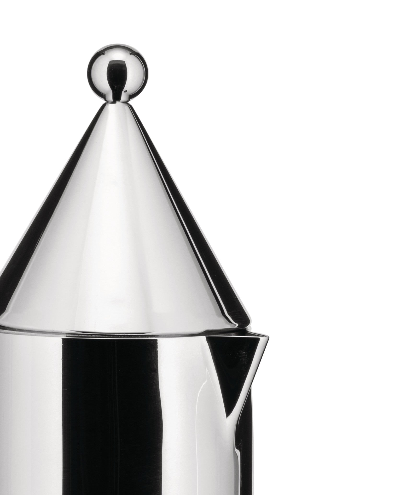
图：La Conica 锥形上半部特写 ——"桌面微建筑" 的纯粹几何。图源：Alessi 官方 La Conica 产品页。
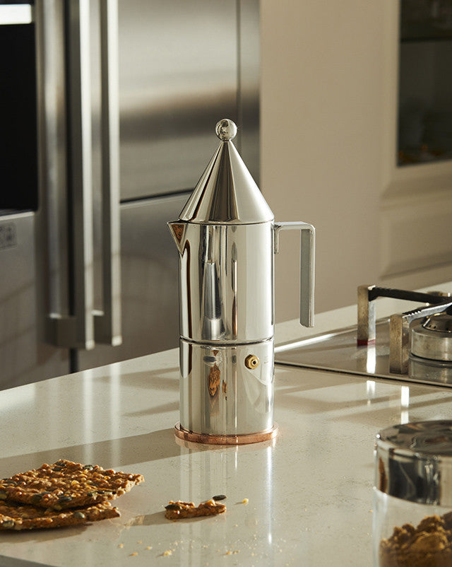
图：La Conica 厨房台面使用场景 —— 建筑尺度语言进入日常厨房。图源：Alessi 官方 La Conica 产品页。
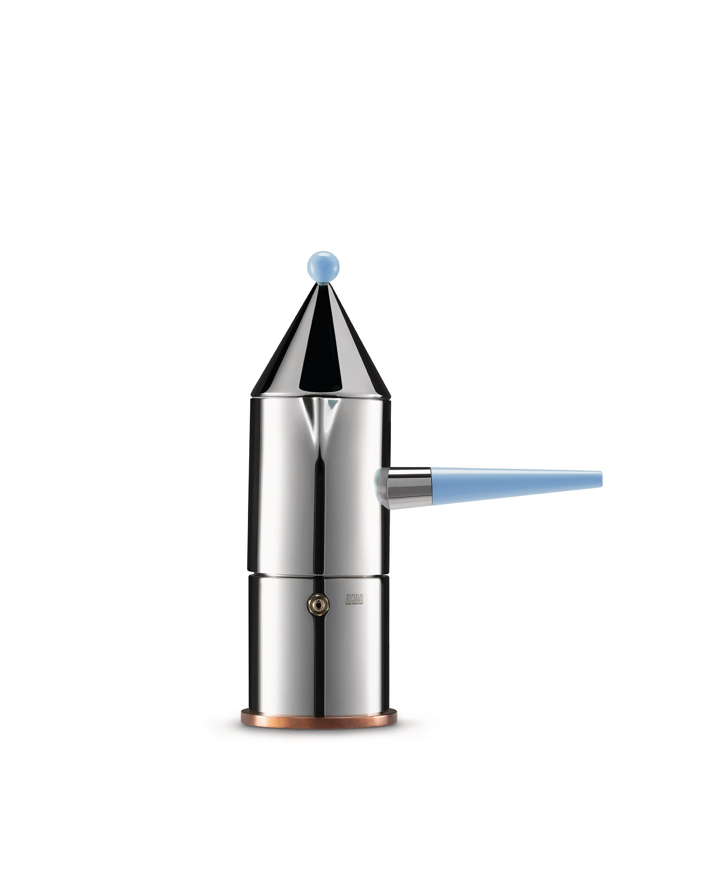
图：La Conica Manico Lungo 长柄再版（2021）——Rossi 最初构想的长柄版本被复原投产。图源：Alessi 官方长柄版产品页。
9093 鸟鸣水壶（Michael Graves，1985）
9093 出自建筑师 Michael Graves（1934–2012），源头是 1983 年 Tea & Coffee Piazza 项目中的茶壶提案，1985 年以水壶形态投产，官方称其 "有史以来全球最畅销的设计品之一"。造型为锥形壶身＋圆底＋壶嘴上的蓝色小鸟（whistling bird）：鸟形哨嘴在水沸时发出哨音，官方叙事是 "让你微笑" 的壶。18/10 抛光不锈钢壶身、黑色 PA（聚酰胺）手柄与盖钮、磁性钢底适用电磁炉，容量 1.5L、高 16.5cm。现行价格：欧盟站 €170–190（40 周年黑版 €190）、美国站 $350–375。经销商与博物馆商店渠道大量在售，MoMA Design Store 亦有陈列。
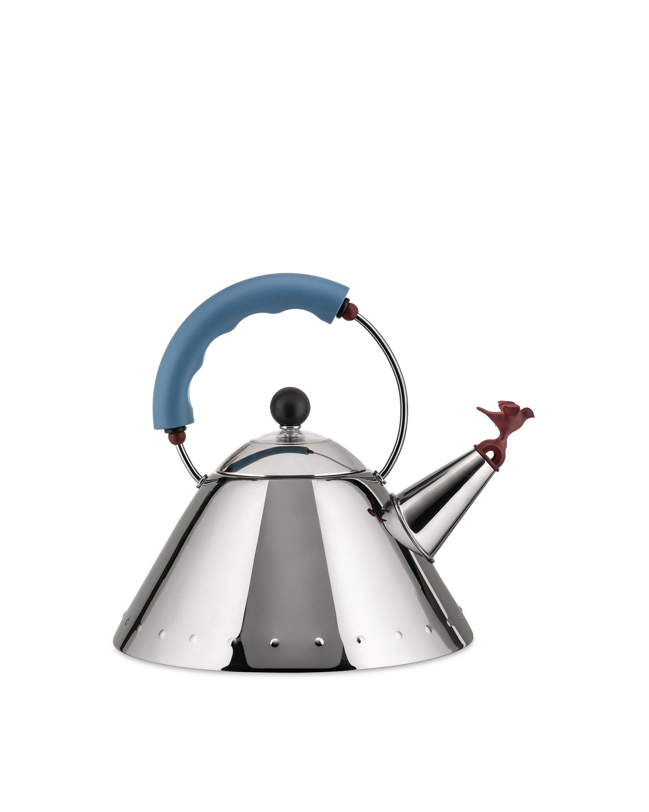
图：9093 蓝鸟水壶（Michael Graves, 1985）—— 锥形壶身与壶嘴蓝色小鸟哨，Tea & Coffee Piazza 项目的延伸成果。图源：Alessi 官方 9093 产品页。
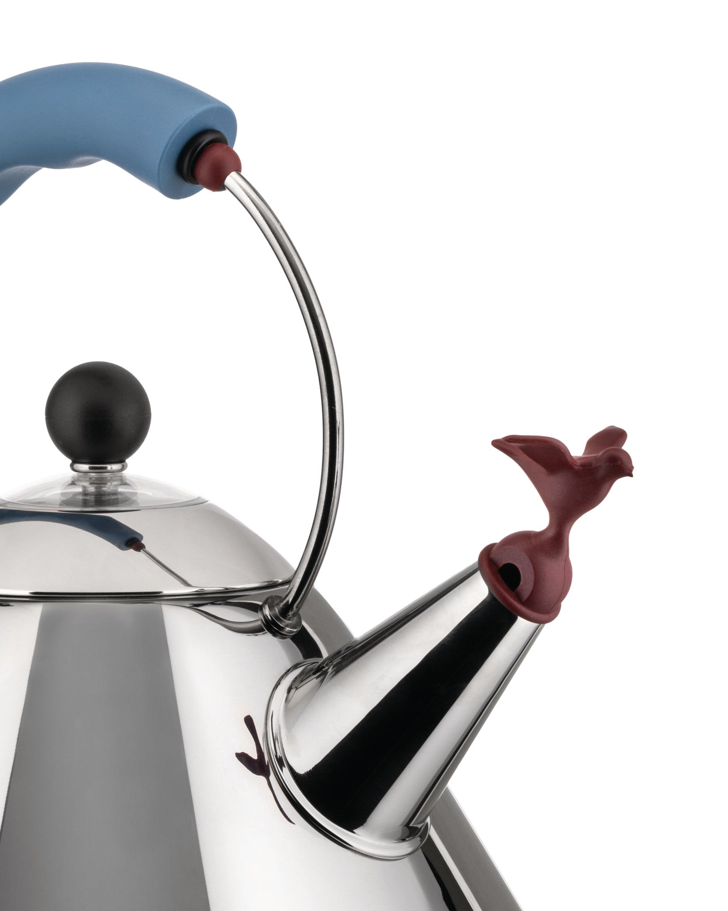
图：9093 蓝色小鸟哨嘴特写 —— 水沸时发出哨音的拟人化细节。图源：Alessi 官方 9093 产品页。
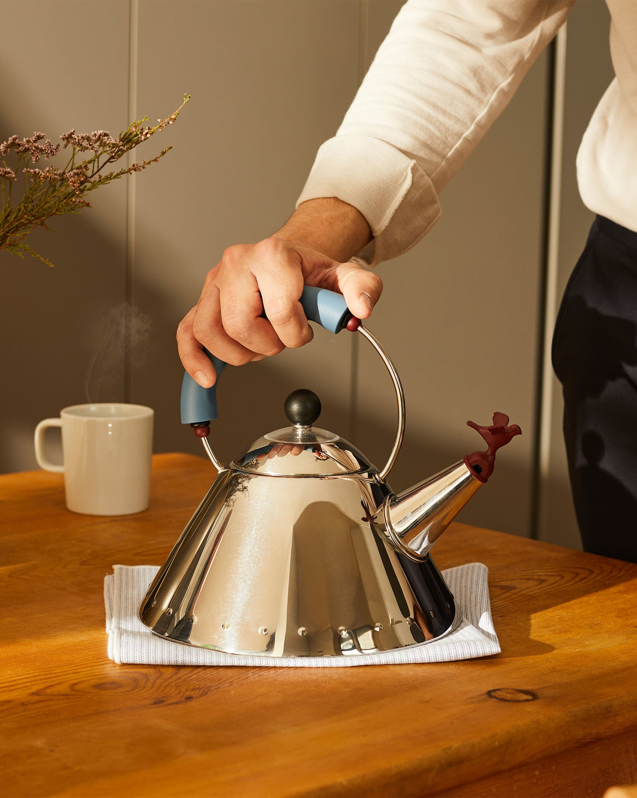
图：9093 厨房台面使用场景 —— 黑色 PA 手柄与不锈钢壶身。图源：Alessi 官方 9093 产品页。
Tea Rex（2015，30 周年）
2015 年，为 9093 投产 30 周年，品牌推出 Tea Rex 版：把壶嘴的蓝色小鸟换成 "茶龙"（tea dragon）形象，延续 Graves 1983 年原稿的奇幻语言，向已故建筑师致意。壶身、龙形哨嘴与配色构成系列中辨识度最高的一款周年纪念件。
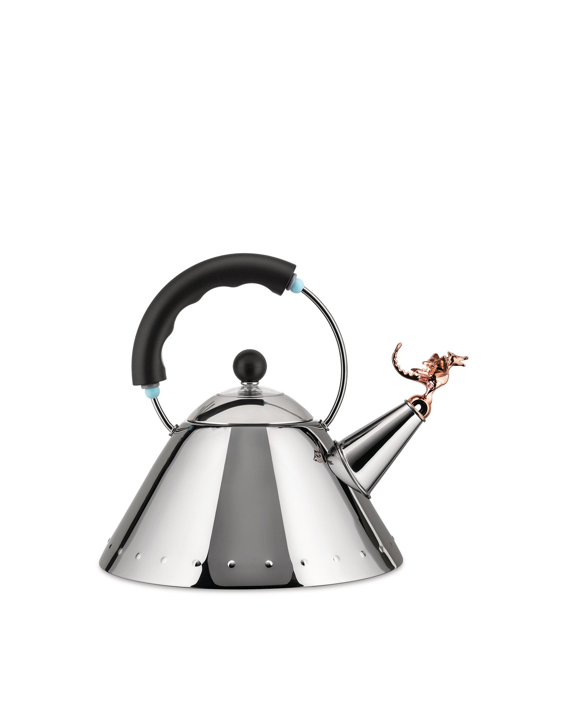
图：Tea Rex 茶龙水壶（2015，30 周年版）—— 壶嘴龙形哨与专属配色。图源：Alessi 官方 Tea Rex 产品页。
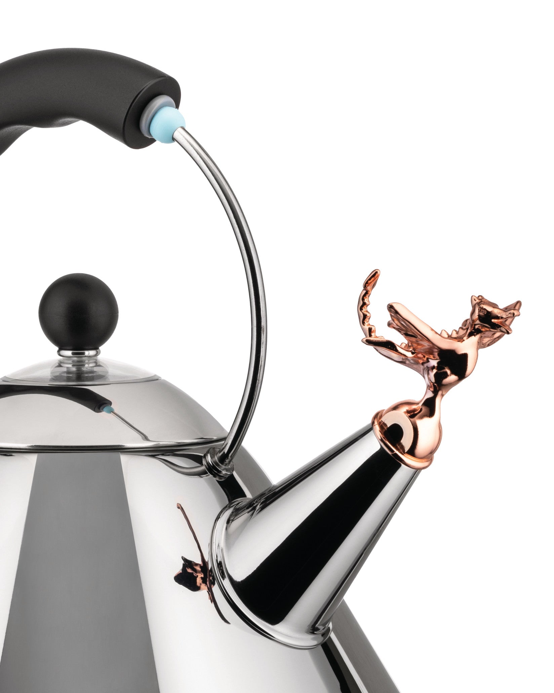
图：Tea Rex 龙形壶嘴特写 —— 周年纪念版的核心识别元素。图源：Alessi 官方 Tea Rex 产品页。
9093 BB（2025，40 周年）
2025 年，9093 投产 40 周年，品牌推出 9093 BB 黑鸟版：壶身、手柄与鸟哨整体黑色处理，配黑色鸟形哨嘴，与蓝鸟经典版构成对照。欧盟站标价 €190。
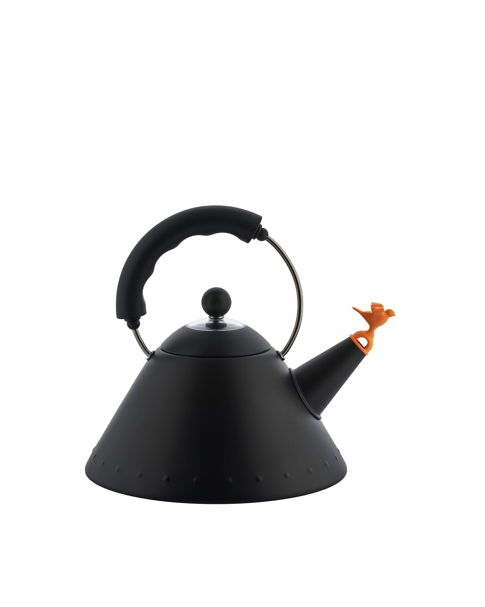
图：9093 BB 黑鸟水壶（2025，40 周年版）—— 通体黑色的周年纪念形态。图源：Alessi 官方 9093 BB 产品页。
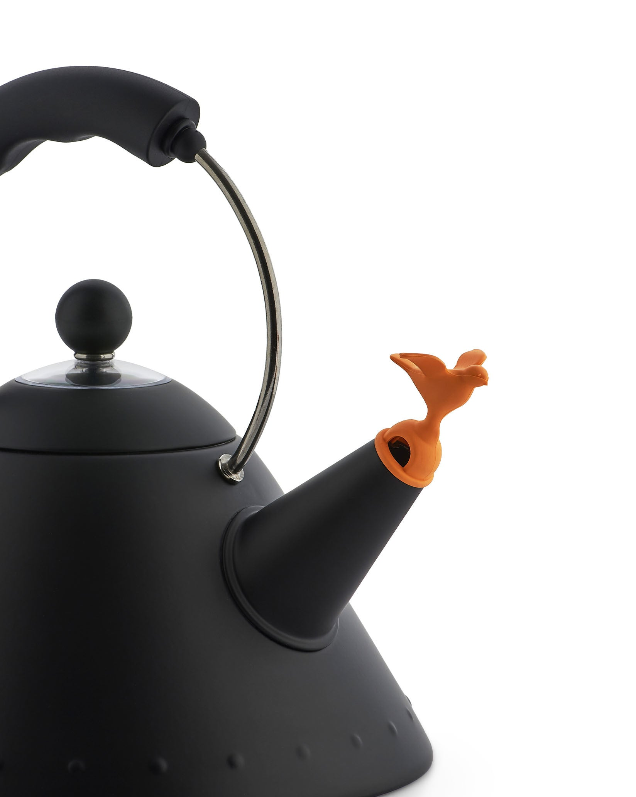
图：9093 BB 黑色鸟哨特写 ——40 周年版的差异化细节。图源：Alessi 官方 9093 BB 产品页。
La Cintura di Orione（Richard Sapper，1986）
La Cintura di Orione（"猎户腰带"）是 Richard Sapper 与名厨 Gualtiero Marchesi 合作的锅具系列，1986 年上市，常被误记为咖啡壶 —— 官方与主流目录口径均为锅具。系列采用 "trilamina" 三层复合结构（不锈钢－铝－不锈钢），均热快、轻、感应炉兼容，含汤锅、单柄锅等规格；系列名取自猎户座三星连线的意象，锅沿压出代表三星的装饰。现行欧盟站价格：长柄带盖汤锅 €230（促销期 €161）、长柄单柄锅 €285。
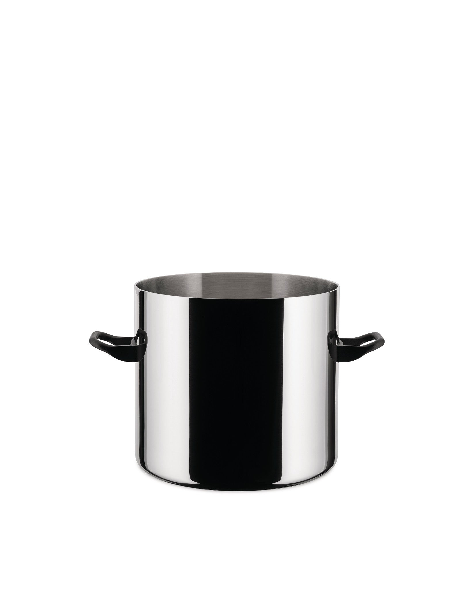
图：La Cintura di Orione 长柄带盖汤锅（Sapper / Marchesi, 1986）——trilamina 三层复合结构锅具系列成员。图源：Alessi 官方 Cintura 汤锅页。
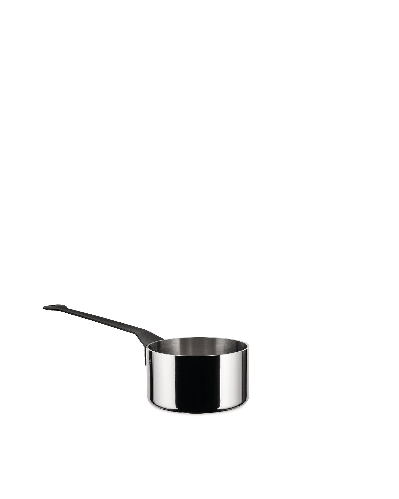
图：La Cintura di Orione 长柄单柄锅 —— 系列另一规格。图源：Alessi 官方 Cintura 单柄锅页。
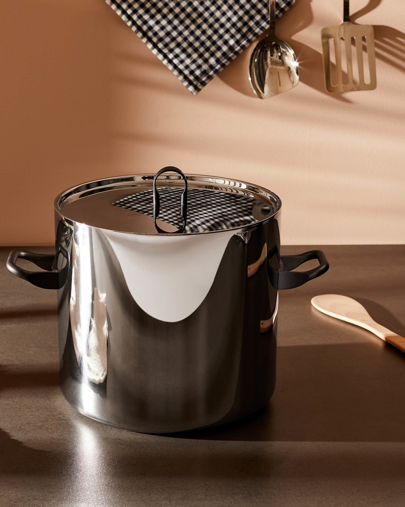
图：La Cintura di Orione 烹饪场景 ——"猎户腰带" 命名的锅具在厨房的日常形态。图源：Alessi 官方 Cintura 产品页。
Juicy Salif（Philippe Starck，1988/1990）
Juicy Salif 柠檬榨汁器由 Philippe Starck 设计于 1988 年，1990 年投产：铸铝（cast aluminium）一体三脚形态，顶部锥形榨汁体，像一艘飞船、一颗弹头、一个异形生物。官方叙事从不掩饰其功能悖论 ——Starck 与 Alberto Alessi 的官方引文是 "它不是为了榨柠檬，而是为了开启对话"。1990 年首版即成为 20 世纪最具争议也最著名的榨汁器；1990 年入藏纽约 MoMA 永久馆藏（object 48.2000.2，铸铝）。现行在售：欧盟站 €90、美国站 $150，多色（铝本色、多色粉涂）版本长期在产，Bestsellers 栏目常驻。
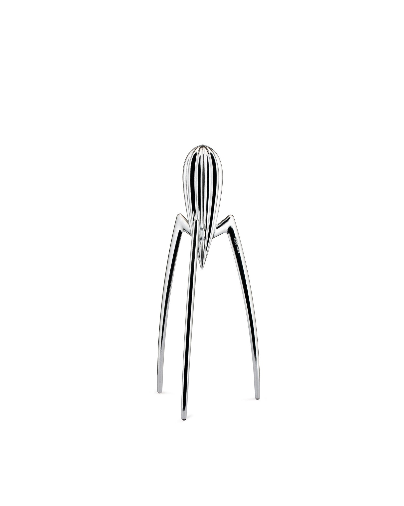
图：Juicy Salif 柠檬榨汁器（Philippe Starck, 1990）—— 铸铝一体三脚形态，MoMA 永久馆藏（object 48.2000.2）。图源：Alessi 官方 Juicy Salif 产品页。
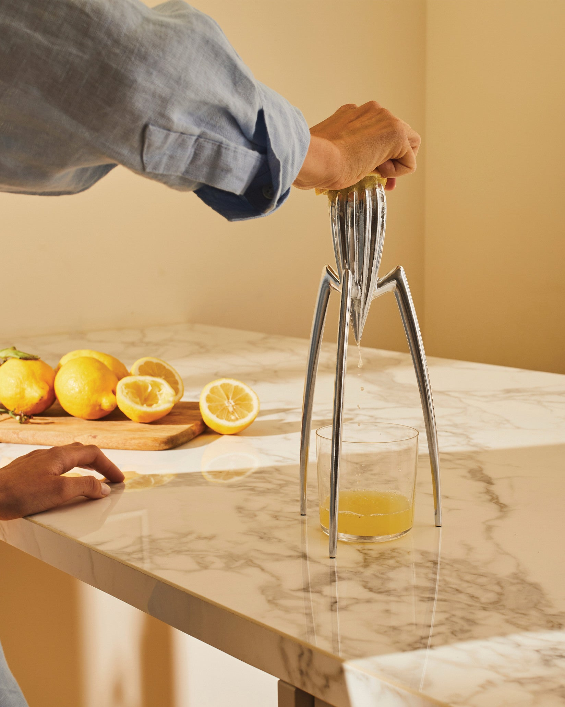
图：Juicy Salif 桌面使用场景 ——"开启对话" 叙事的产品在场感。图源：Alessi 官方 Juicy Salif 产品页。
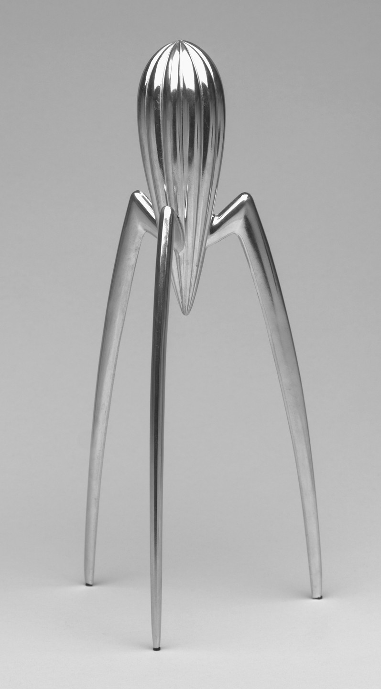
图：Juicy Salif 入藏 MoMA 时期的黑白档案照（经互联网档案馆取得）—— 馆藏叙事的原始证据。图源：MoMA 馆藏记录。
Anna G.（Alessandro Mendini，1994）
Anna G. 人形开瓶器由 Alessandro Mendini 设计，1994 年首产：拟人化长裙人像，镀铬锌合金（zamak）一体成型，头部可转动，手臂即开瓶杠杆，面部是 Mendini 的标志性平面人脸。官方把 Anna 描述为 "一位有着金属长裙与表情面孔的女士"，系列衍生大量限量涂装与联名面孔。现行基础版欧盟站 €60–95（特涂版 €95）、美国站 $155；限量版（设计师 / 艺术家涂装，如 Studio Temp 版）€3,000。Anna G. 是 Bestsellers 常驻符号件之一。
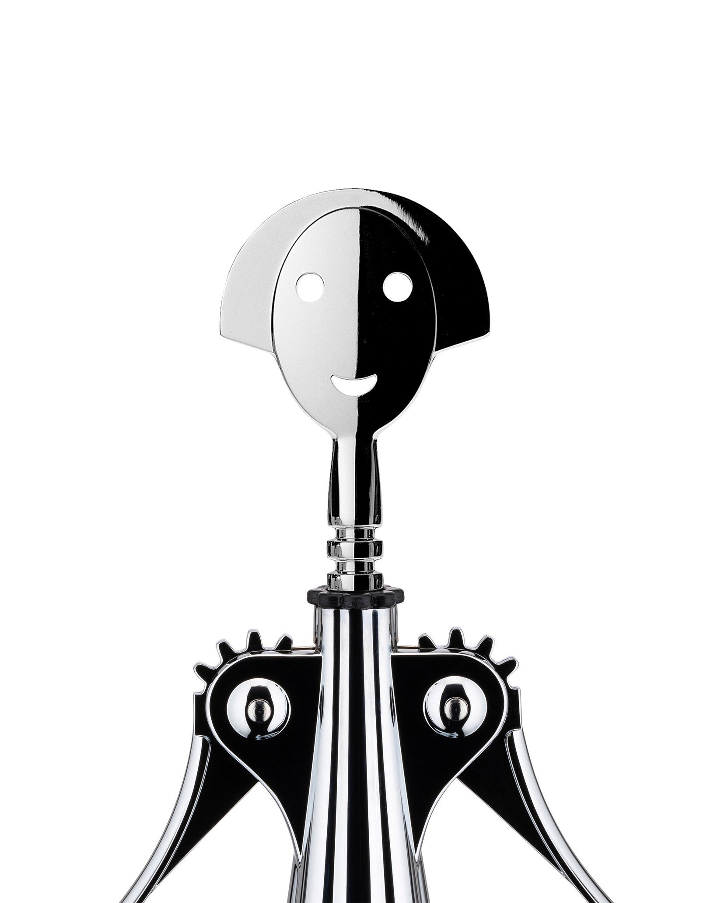
图：Anna G. 面部特写（Alessandro Mendini, 1994）—— 标志性平面人脸与可转头部。图源：Alessi 官方 Anna G. 产品页。
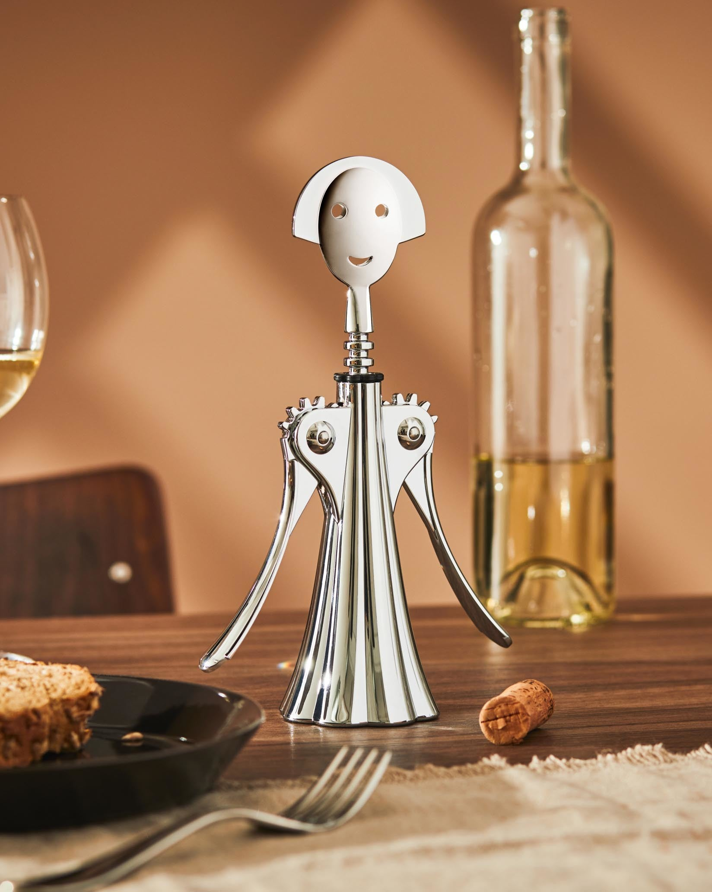
图：Anna G. 桌面开瓶场景 —— 拟人化长裙与开瓶杠杆臂。图源：Alessi 官方 Anna G. 产品页。
Nuovo Milano（Ettore Sottsass，1987）
Nuovo Milano 是 Ettore Sottsass 与 Alessi 合作中最具代表性的作品：1987 年设计的全套不锈钢刀叉餐具（flatware），1989 年获金圆规。刀叉勺以细长几何轮廓区别于传统餐具曲线，把 Memphis 式的造型语言带入餐桌功能件，官方将其列为其目录中的金圆规作品之一。现行在售为 18/10 不锈钢版本。
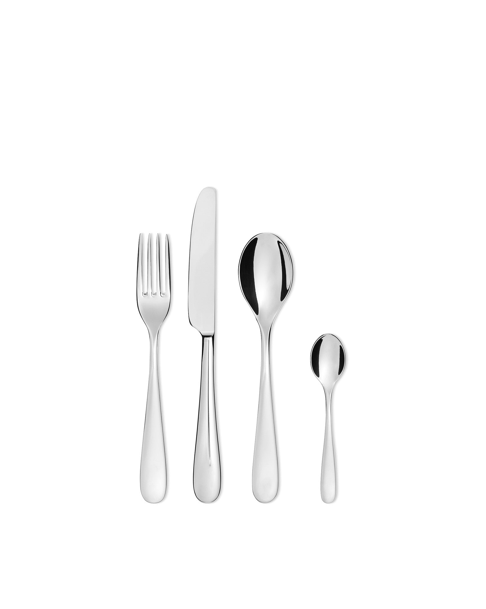
图：Nuovo Milano 刀叉餐具（Ettore Sottsass, 1987，1989 金圆规）—— 细长几何轮廓的成套形态。图源：Alessi 官方 Nuovo Milano 产品页。
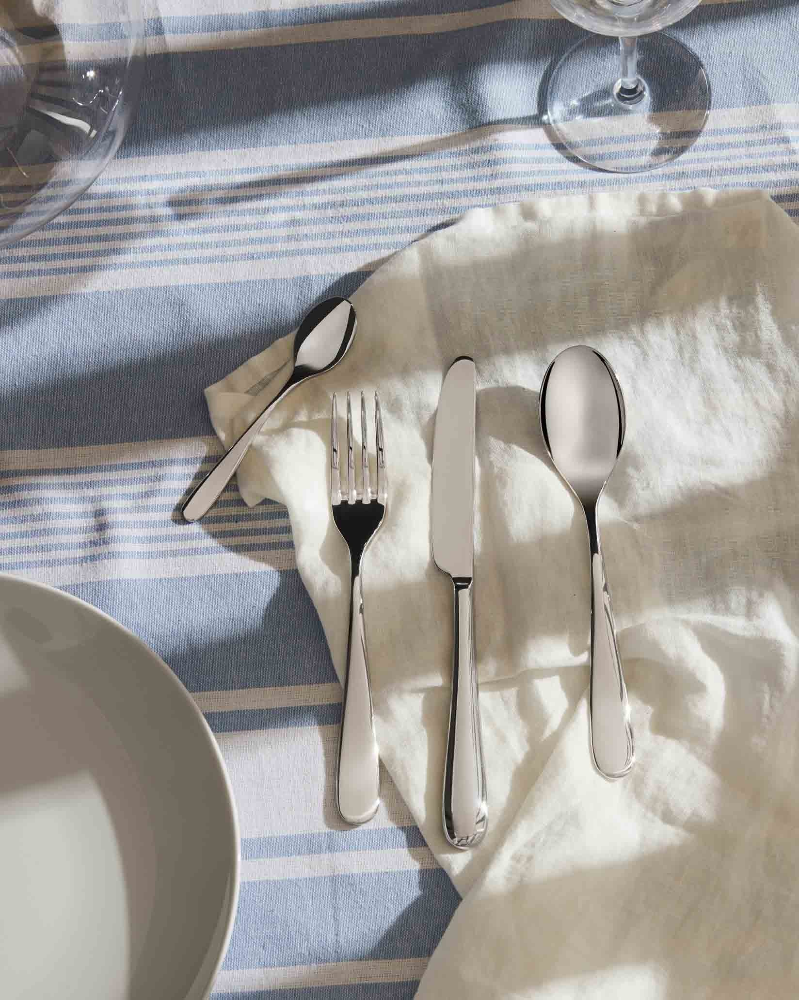
图：Nuovo Milano 餐桌场景 ——Memphis 造型语言进入日常餐桌。图源：Alessi 官方 Nuovo Milano 产品页。
Alessi 厨房线：Mami、Pots&Pans、Edo 与 Convivio
现行 Cookware 体系由四条锅具线构成：Mami、Pots&Pans、Edo、Convivio，全部 18/10 不锈钢、感应炉兼容、可入洗碗机。Mami 为入门通用锅具线（汤锅 / 煎锅 / 奶锅），Pots&Pans 为双耳 / 长柄套装线，Edo 面向高端煮食（含蒸锅配置），Convivio 面向聚会大容量场景。四条线覆盖从日常单锅到宴会套装的完整价格带，套装欧盟站约 €300–530，是 "高端日常家用" 任务群的主要载体。
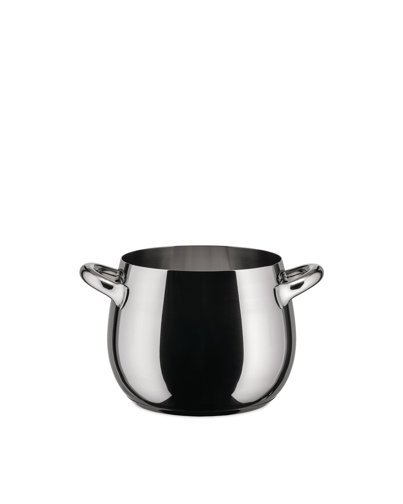
图：Mami 锅具线（Stefano Giovannoni, 1999，A di ALESSI 入门厨具）—— 汤锅 / 煎锅 / 奶锅套件形态。图源：Alessi 官方 Mami 产品页。
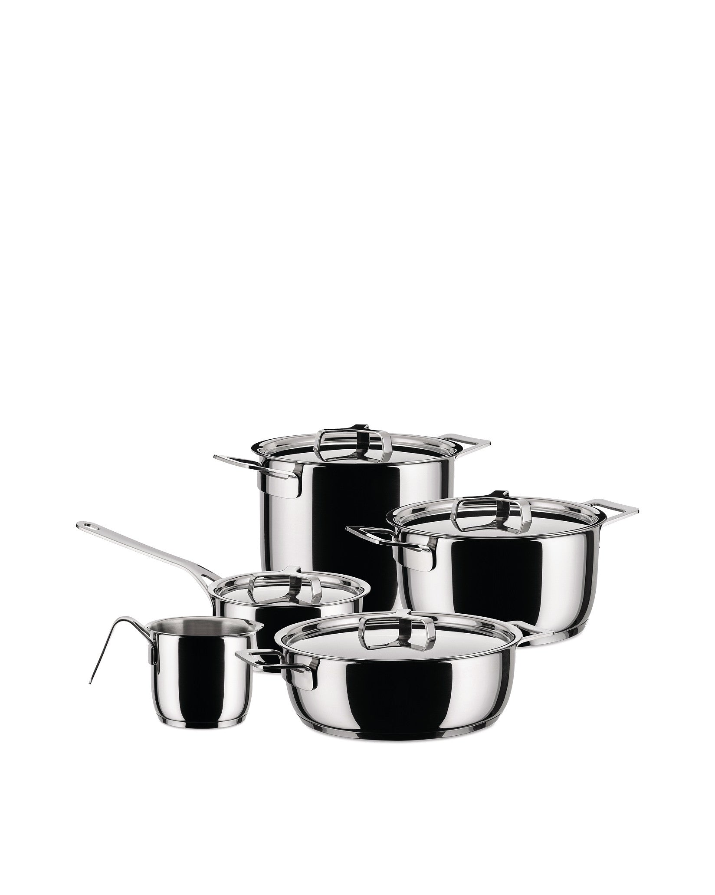
图：Pots&Pans 锅具套装线（Jasper Morrison, 2006）—— 双耳与长柄规格组合。图源：Alessi 官方 Pots&Pans 产品页。
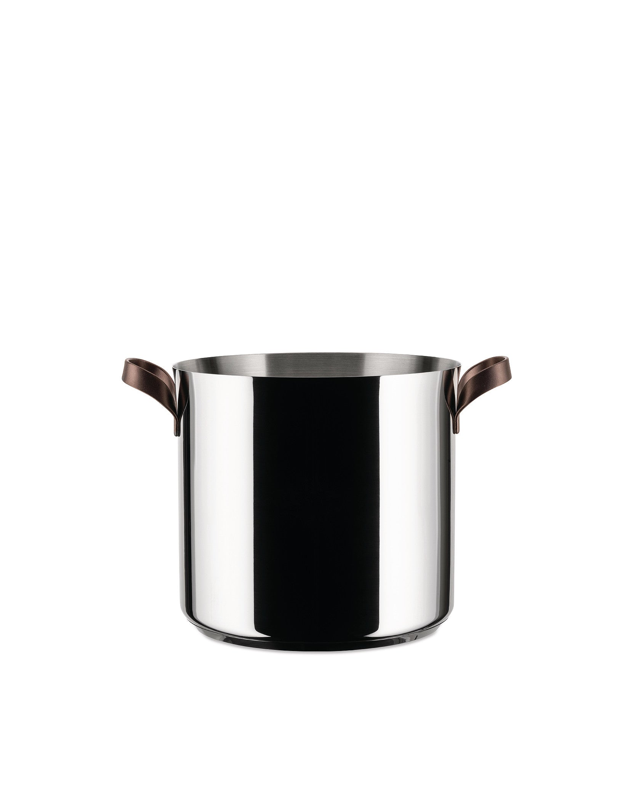
图：Edo 锅具线（Patricia Urquiola, 2018）—— 含蒸锅配置的高端煮食规格。图源：Alessi 官方 Edo 产品页。
图：Convivio 锅具线（David Chipperfield, 2023）—— 聚会大容量场景的套装规格。图源：Alessi 官方 Convivio 产品页。
联名线：Paul Smith 与 Virgil Abloh
Alessi 的联名实践把经典符号交给时尚与艺术家重绘：Paul Smith 与品牌合作推出 9093 鸟鸣水壶彩条版与 Alessandro M. 开瓶器特别版 ——Paul Smith 的彩虹条纹语言被转译到不锈钢壶身；Virgil Abloh 的 Conversational Objects 系列把日常物件（开瓶器、托盘）做成工业感黑黄装置件，延续 Alessi"物件承载观念" 的叙事。
图：Paul Smith × 9093 联名水壶（2024 彩条版）—— 彩虹条纹语言的不锈钢转译。图源：Paul Smith 官方合作页。
图：Paul Smith × Alessandro M. 联名开瓶器特别版（2024）。图源：Alessi 官方联名产品页。
图：Virgil Abloh Conversational Objects 系列（2023，刀叉件）—— 黑黄工业感的日常物件装置。图源：Alessi 官方 Abloh 合作页。
2020s：Plissé 与百年装置
2025 年，Michele De Lucchi 为品牌设计的 Plissé 电水壶投产：金属表面以褶皱（plissé）肌理成形，把 "织物褶皱" 的视觉语言带入电水壶功能件，2026 年已进入官网 Bestsellers 常驻位。同期，2022 年米兰设计周的 "Alessi 100-001" 展览以 12 项价值观装置收束百年厂史叙事；2021 年百年之际品牌宣布 12 个新项目，覆盖材料实验（Rekrill 生物聚合物）与实验品牌（Il Tornitore Matto）。
图：Plissé 电水壶（Michele De Lucchi, 2025）—— 褶皱金属肌理电水壶，现行 Bestsellers 常驻件。图源：Alessi 官方 Plissé 产品页。
图：Alessi 100-001 百年展览装置现场（2022 米兰设计周）——12 项价值观装置的展示形态。图源：Alessi 官方活动页。
08 Aesthetics 美学：镜面钢、拟人化与品牌红
字标史与品牌红的稳定内核
Alessi 的字标先后经历四代：FAO 时代的手写体印章式标识、ALFRA 时代鹰徽图形标、1980 年代 Franco Sargiani 设计的字标，以及 1983 年由 Ettore Sottsass 设计的字标 —— 后者确立了至今沿用的家族式字形。2024 年，品牌与 Studio TEMP 合作发布现行字标（官方 CDN 上为红色版本），在保持 "Alessi" 字形识别度的同时更新数字触点上的应用。品牌色以红（Alessi 红）为核心识别色，官网、包装与限量涂装大量使用；金属件的镜面抛光与缎面处理构成第二层 "视觉识别"—— 抛光钢面在货架与台面上反射光线，是 "梦工厂" 叙事里最直观的美学信号。
图：深泽直人概念店陈列细节 —— 红字标识与金属产品在店内视觉中的关系。图源：Alessi 官方概念店新闻。
形态语言：几何、拟人与雕塑
Alessi 的器物形态呈现三条平行线索。一是几何抽象：La Conica 的球体＋圆锥体、9090 的圆柱蒸汽机语言、Nuovo Milano 的细长直线轮廓，把建筑师尺度压缩进器物。二是拟人化：Anna G. 的人形开瓶器、9093 的鸟哨壶嘴、Tea Rex 的龙哨，物件被赋予面孔与性格，成为 "桌面上的角色"。三是雕塑感：Juicy Salif 的铸铝三脚形态、Plissé 的褶皱肌理，产品以 "独立雕塑" 的姿态占据台面。三种语言共享同一条底层规则：形态服务于叙事，叙事服务于 "被看见、被记住、被讨论"。
表面与光：镜面钢与缎面铝
材料表面策略分三档：18/10 不锈钢镜面抛光（Bombé、9090、9091、9093 等经典件）强调高反射的 "宝石感"；缎面处理（锅具线、部分托盘）强调触感与日常耐用；粉涂色面（Juicy Salif 多色版、Anna G. 特涂版）为金属件注入流行色。限量涂装与联名（Paul Smith 彩条、Studio Temp 艺术涂装）把 "表面" 本身当作创作画布。CMF 整体逻辑是 "以金属为基底，以色面为变奏"。
09 Design 设计：诗意、工艺与 "中间地带"
设计哲学：让诗意成为产品规格
Alberto Alessi 的设计观在官方引文中反复出现："一件设计作品必须打动人心、传达情感、唤起记忆、制造惊喜、逾越常规 —— 总之它必须是诗意的。" 他早期提出 "生产不仅具有功能、还能满足人们对艺术与诗歌之需求的物品"，并引英国精神分析学家 Donald Winnicott 的 "过渡性客体"（transitional objects）理论，把设计物定位为连接情感与日常的中介。官方因此把公司称为 "Dream Factory"（梦工厂）：一个面向世界最优创意的平台，而非传统制造厂。这条哲学的落地机制是 "设计师作者制度"—— 官方口径 "设计师不是单纯的顾问，他们是真正的作者"，Alberto Alessi 的自我角色是 "收集设计的收藏家"（design collector），用委托与策展的方式组织创意。
图：深泽直人概念店主视觉（米兰 / 东京）——"让诗意进入日常" 哲学在零售空间的落地。图源：Alessi 官方概念店新闻。
CMF 体系：钢、铝与热塑树脂
材料体系以三类为主：18/10 不锈钢（水壶、咖啡具、锅具，冷压成形与镜面抛光）；铸铝（Juicy Salif、雕塑件）；热塑树脂与尼龙（手柄、厨房小件、底座类部件）以及 zamak 锌合金（Anna G. 人形件）。装饰层覆盖镀铬、镀银（早期）、粉涂色面与紫铜复底（La Conica）。制造端以 "冷压成形" 为核心工艺：水壶与摩卡壶的壶身在不锈钢板上冷压拉伸成形，再经旋压收边、焊接、抛光，最复杂件全程 120 多道工序；历史最久、最复杂的冷压不锈钢件仍在 Crusinallo 老厂生产。
制造与质量：Crusinallo 的工序纵深
工厂位于 Crusinallo di Omegna，是 18/10 不锈钢深拉、焊接、旋压、抛光的完整工序所在地；2001–2003 年由 Mendini 主持扩建。质量维度上，官方以 "18/10" 钢、感应炉兼容、洗碗机可用作为可验证承诺；售后政策为 24 个月保修。博物馆与档案体系（Museo Alessi 逾 25,000 件藏品）同时承担设计资产存储与 "工艺正统性" 证明功能。
10 Experience 体验：官网、博物馆与概念店
官网电商：叙事与零售一体
alessi.com 为 Shopify 架构的多语种 D2C 商城，区域子站覆盖意、法、德、西、英、美、瑞、瑞典等市场；支付含信用卡、ShopPay、PayPal、Google Pay、Apple Pay；收货后 14 天内可申请更换。官网同时承担品牌史、产品故事、Museo 导览与 Corporate Gifts 定制入口，Oakley Capital 组合页披露其约 30% 收入来自数字渠道。Bestsellers 栏目长期固定四件符号：Plissé、Juicy Salif、Pulcina、Anna G.。
图：概念店内咖啡吧（与 Caffè Vergnano 合作）—— 零售空间内的品尝体验环节。图源：Alessi 官方概念店新闻。
实体空间：博物馆、旗舰店与概念店
体验的实体层分三处。Museo Alessi（1998 年开馆，Mendini 设计）位于工厂内，免费参观、仅接受预约，藏量逾 25,000 件，是品牌史的肉身档案馆。旗舰店两代：纽约 SoHo 130 Greene Street 旗舰 2006 年开业（Asymptote Architecture 室内与展陈）、米兰 Via Manzoni 旗舰 2011 年开业；2025/2026 年，深泽直人操刀的全新概念店在米兰与东京表参道同步开业，店内常驻陈列 500 余件产品并设咖啡吧。体验链路的设计逻辑是 "先逛博物馆，再进门店，最后官网下单"—— 叙事空间与交易空间分离，共同完成溢价兑现。
图：东京南青山概念店夜景 —— 深泽直人店面设计的夜间形态。图源：Alessi 官方概念店新闻。
服务与口碑：保修、刻字与争议
售后承诺为 24 个月保修；礼品场景提供刻字（Engravable）与定制包装服务；B2B 提供 logo 印制与定制色。口碑两端：礼品端高频出现 "有故事、包装好、拆开即惊艳" 的评价；功能端存在可追踪的争议 ——Juicy Salif 的榨汁实用性长期被讨论（官方叙事不回避这一点），部分摩卡壶用户对清洁难易提出意见。经销商渠道普遍 7–8 折售经典件，与官网正价形成价差，构成 "官网买故事、经销商买折扣" 的双轨体验。
11 Competition 竞品：设计小物与高端厨具赛道
设计礼品赛道：同行对照
Alessi 所处 "设计礼品 / 桌面小物" 赛道的主要同行包括：意大利的 Kartell（塑料家具与小件，Bouroullec 等当代设计师）、Magis（入门设计家具）；北欧的 Normann Copenhagen 与 HAY（丹麦设计小物与日常件）、Tom Dixon（英国工业感家居小件）；意大利图像装饰品牌 Fornasetti（瓷盘与香薰）。渠道与价格带高度重叠 —— 博物馆商店、高端百货家居层、设计电商均有交叉；品牌区隔上，Kartell 以塑料模压与当代语言取胜，HAY/Normann 以北欧极简与性价比取胜，Tom Dixon 以黄铜 / 大理石工业感取胜，Alessi 以 "设计师署名＋金圆规 / 博物馆背书" 取胜。无直接同体量的 "金属礼品设计工厂" 型竞品。
摩卡壶与咖啡具赛道：Bialetti 与专业咖啡品牌
Alessi 的摩卡壶线（9090、La Conica、Moka Alessi）与大众摩卡壶龙头 Bialetti（Moka Express 1933 年发明，年销数亿件）构成 "设计溢价 vs 大众量" 的两端对照：Bialetti 铝壶定价 €20–40，Alessi 摩卡壶 €45–310，价格差约 2–15 倍。Bialetti 近年推出设计师联名（如与设计名人的 Moka 系列），但整体仍以功能普及与渠道铺量为逻辑；Alessi 摩卡壶的购买逻辑是 "收藏一件上了金圆规 / MoMA 的经典件"。高端咖啡器具赛道另有 La Marzocco、Fellow 等专业设备品牌，与 Alessi 的桌面器皿定位错位。
高端厨具赛道：Fissler、WMF 与设计锅具
锅具线（La Cintura di Orione、Mami、Pots&Pans、Edo、Convivio）直面德国专业厨具 Fissler、WMF 与法国 Mauviel：后者的竞争轴是 "专业性能参数"（钢种、导热结构、质保年限、米其林厨房使用），Alessi 的竞争轴是 "设计署名＋意大利美学＋礼品属性"。两者在产品层真实重叠（18/10 钢、三层复合底、感应炉兼容），但用户决策权重不同：买 Fissler 的人比较导热与质保，买 Alessi 锅的人比较 "上桌好不好看、送给谁合适"。
渠道竞品：博物馆商店与设计电商
设计小物赛道的竞争同时发生在货架层：MoMA Design Store、Cooper Hewitt Shop 等博物馆商店与设计电商（Finnish Design Shop、Connox、Selfridges、Farfetch、Wayfair）的陈列位是直接战场。博物馆商店的选品逻辑是 "馆藏与设计史背书"，Alessi 的 MoMA 馆藏身份（9090、Juicy Salif）使其天然占据这类货架；设计电商的选品逻辑是 "转化率与折扣能力"，北欧系小件与 Tom Dixon 在此以价格与上新速度竞争。渠道层竞争的结果是：Alessi 在博物馆语境以 "作者史" 胜出，在设计电商语境以 "礼品心智" 与品牌认知胜出，但在 "性价比日常件" 上让位于北欧系品牌。
12 Strategy 战略：从家族金属厂到资本化设计平台
五级跳：一百年的战略路径
Alessi 的战略演进可分五个台阶。第一级（1921–1931）手工镍银工坊，为酒店做桌面器皿代工；第二级（1950s–1960s）转向不锈钢与专业餐饮，建立工业制造能力；第三级（1970–1980s）引入外部设计师，把公司定位从 "制造厂" 改写为 "设计工厂"，Tea & Coffee Piazza（1983）与 Centro Studi Alessi 把 "策展式产品开发" 制度化；第四级（1990s–2000s）全球化零售与三条品牌线（ALESSI/OFFICINA ALESSI/A di ALESSI，2006），材料扩展到塑料、木、瓷，限量与编号线成型；第五级（2019 至今）外部资本进入（Oakley 2019 年增资 40%）、B Corp 与 Società Benefit 治理化、深泽直人概念店与国际零售更新 —— 从家族工厂走向 "资本化的设计平台"。
数字化与 D2C：30% 线上收入
Oakley 增资后的数字化投入与概念店计划同步推进：alessi.com 完成 Shopify 多语种电商架构，区域定价、支付与 14 天退换政策落地；官方组合页披露约 30% 收入来自数字渠道。数字策略的骨架是 "叙事即零售"—— 产品故事页同时承担设计史教育与下单转化，Bestsellers 与 Gift 栏目把长销符号与礼品场景直接对接。实体端，深泽直人概念店与 Museo Alessi 构成 "线下体验、线上成交" 的闭环；限量与刻字定制通过官网渠道放大溢价。对一家百年家族厂，这一轮的意义是把 "设计势能" 转化为可衡量的线上营收。
收藏与联名：Officina、复刻与实验线
品牌把 "收藏" 做成产品线：Officina Alessi（1980s 超级品牌，2006 复活为实验限量线）承载小批量与实验项目；限量线（Limited Editions）与编号件（Anna G. 限量 €3,000、The Jester 开瓶器、Casse-noix 核桃夹）服务藏家；2020s 的实验品牌 Il Tornitore Matto 以 "Last Pot" 骨灰瓮系列等极端叙事试探品类边界。联名侧：Paul Smith（9093 彩条水壶、Alessandro M. 开瓶器）、Virgil Abloh（Conversational Objects）、以及 100-001 百年项目，把经典符号交给时尚与艺术家重绘。这条 "收藏＋联名＋实验" 线的商业作用是维持品牌的设计势能与媒体曝光，同时为经典符号线引流。
股权、治理与可持续
2019 年 8 月 28 日，Oakley Capital 增资取得 40% 股权，家族保留 60%；增资款投入零售、传播与数字化。2024 年前后媒体口径为 Oakley 51% / 家族 49%（无公司官方文件佐证）。现行 CEO 为 Alberto Camerlengo，主席 Alberto Alessi，设计总监为家族第四代 Carlo Gasparini。治理层面，公司 2017 年获 B Corp 认证，2020 年注册为 Società Benefit，官方自称意大利设计工厂中首家；可持续动作覆盖 Rekrill 生物聚合物材料实验、ISO 14001 环境管理体系与 1% 利润社区基金承诺。100-001 展览的 12 项价值观把 "诗意、工艺、可持续" 写进品牌叙事。
13 视频与访谈资料
官方内容以图文史为主，公开访谈与影像集中于几个入口：Alessi 官方历史页（1921 年至今分年图文史）、官方 "Dream Factory" 关于页（品牌叙事视频与工厂影像）、Museo Alessi 页面（博物馆导览）、官方活动页（Alessi 100-001 展览记录、深泽直人概念店新闻与图片集）、官方产品故事页（各经典件叙事）。第三方资料：The Dream Factory 一书（2007，Alberto Alessi 与 Marcovalerio Pozzati 合著，archive.org 可查）；费城艺术博物馆 2016–2017 "Alessi: Design Factory" 展览与展签文本（官方一手叙事的集中来源）；设计媒体对 Tea & Coffee Piazza、9090 广告、Juicy Salif 的常年报道。以上入口的 URL 与检索日期见 15 章附录的证据登记表。
14 来源与延伸阅读
来源体系分三层。官方一手：alessi.com 历史页、关于页、产品页（各经典件）、Museo 页、官方新闻稿（2019 Oakley 增资、概念店）、官方活动页（100-001 展览）、se.alessi.com 区域站。馆藏与奖项档案：MoMA 馆藏记录（9090、Juicy Salif object 48.2000.2）、ADI 金圆规档案（9090 第 11 届 1979、Nuovo Milano 1989）、Cooper Hewitt 馆藏。媒体与研究：Modern Magazine（Mendini 工厂扩建报道）、费城艺术博物馆展览文本、ART Confcommercio 与 FederlegnoArredo 行业统计、PR 代理股权报道（2024，B 级）。延伸阅读推荐：The Dream Factory（2007）、Alessi: Design Factory 展览目录、Michael Graves 与 Richard Sapper 的官方年表。所有引文与数字对应的 URL 登记在 15 章附录。
15 分析附录
关键事实证据登记（2026-10-26 检索）
| 事实 | 来源 | 等级 |
|---|---|---|
| 1921 年 FAO 创立（Giovanni 与兄弟） | alessi.com/history | A |
| 1945 年 Bombé 设计（Carlo Alessi） | alessi.com 产品页 / 历史页 | A |
| 9090 获 1979 金圆规、入藏 MoMA | ADI 档案 / MoMA 馆藏 | A |
| 9091 为 1983/84 黄铜双音水壶（非金圆规） | alessi.com 产品页 / Sapper 年表 | A |
| La Cintura di Orione 为 Sapper×Marchesi 锅具（1986） | alessi.com 产品页 | A |
| Nuovo Milano 获 1989 金圆规 | ADI 档案 | A |
| 2019-08-28 Oakley 增资 40% | alessi.com 新闻稿 | A |
| 2024 Oakley 51%/ 家族 49% | 公关代理文章 | B |
| 现行价格（Juicy Salif €90 等） | 2026-10-26 官网实查 | A |
待核实事项清单
Officina Alessi 现行目录的完整范围（官网栏目未单列）、Sottsass 1983 字标与现行 Studio TEMP 字标的分界年份、Mami/Pots&Pans/Edo/Convivio 四条锅具线的具体首发年份、天猫旗舰店的品牌授权主体与运营方、京东自营 / 官方旗舰店是否存在、意大利工商档案中的 2024 股权变更记录、Museo Alessi 2023 年米兰回顾展的官方存档、MoMA 9090 馆藏条目的 object number（仅 Juicy Salif 48.2000.2 有官方直链）、La Cintura di Orione 锅沿 "三星装饰" 的官方表述原文。